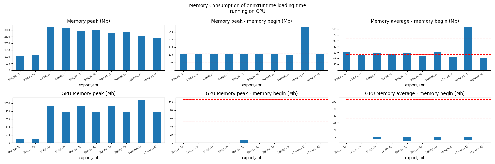
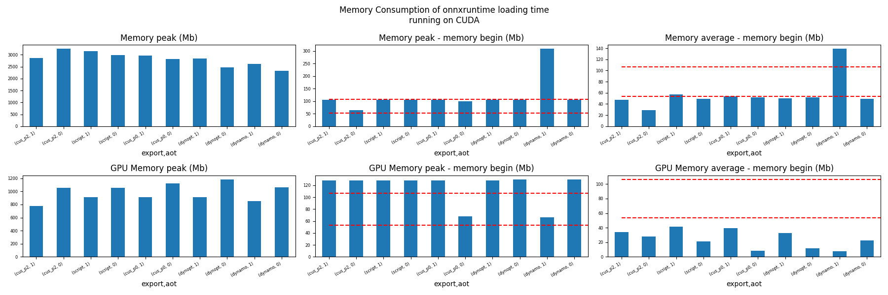
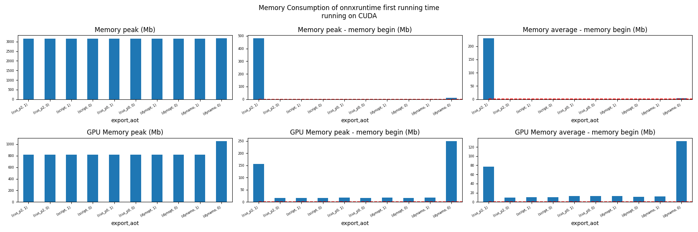
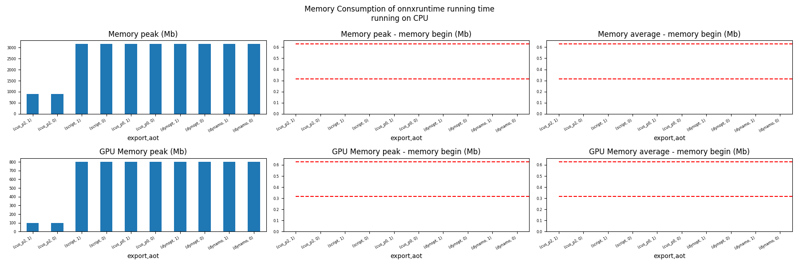
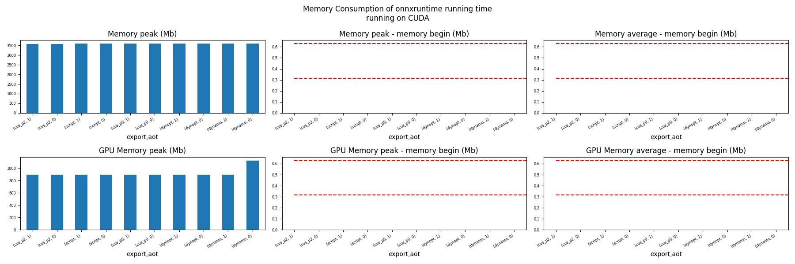

Note
Go to the end to download the full example code
Evaluate different ways to export a torch model to ONNX#
The example evaluates the performance of onnxruntime of a simple torch model after it was converted into ONNX through different processes:
TorchScript-based ONNX Exporter, let’s call it script
TorchDynamo-based ONNX Exporter, let’s call it dynamo
if available, the previous model but optimized, dynopt
a custom exporter cus_p0, this exporter supports a very limited set of models, as dynamo, it relies on torch.fx but the design is closer to what tensorflow-onnx does.
the same exporter but unused nodes were removed and constants were folded, cus_p2
To run the script:
python _doc/examples/plot_torch_export --help
The script takes around 12 with a larger models.
Some helpers#
import contextlib
import itertools
import os
import platform
import pprint
import multiprocessing
import time
import cProfile
import pstats
import io
import warnings
import logging
from pstats import SortKey
try:
with warnings.catch_warnings():
warnings.simplefilter("ignore")
import onnxruntime
has_cuda = "CUDAExecutionProvider" in onnxruntime.get_available_providers()
except ImportError:
print("onnxruntime not available.")
import sys
sys.exit(0)
import numpy as np
import matplotlib.pyplot as plt
import pandas
import onnx
from onnx_array_api.plotting.text_plot import onnx_simple_text_plot
from onnx_array_api.profiling import profile2graph
import torch
from torch import nn
import torch.nn.functional as F
import experimental_experiment
from experimental_experiment.torch_exp.onnx_export import to_onnx
from experimental_experiment.plotting.memory import memory_peak_plot
from experimental_experiment.ext_test_case import get_parsed_args, measure_time
from experimental_experiment.memory_peak import start_spying_on
from tqdm import tqdm
logging.disable(logging.ERROR)
def system_info():
obs = {}
obs["processor"] = platform.processor()
obs["cores"] = multiprocessing.cpu_count()
try:
obs["cuda"] = 1 if torch.cuda.is_available() else 0
obs["cuda_count"] = torch.cuda.device_count()
obs["cuda_name"] = torch.cuda.get_device_name()
obs["cuda_capa"] = torch.cuda.get_device_capability()
except (RuntimeError, AssertionError):
# no cuda
pass
return obs
pprint.pprint(system_info())
[2023-12-15 18:31:25,053] [INFO] [real_accelerator.py:158:get_accelerator] Setting ds_accelerator to cuda (auto detect)
{'cores': 8,
'cuda': 1,
'cuda_capa': (6, 1),
'cuda_count': 1,
'cuda_name': 'NVIDIA GeForce GTX 1060',
'processor': 'x86_64'}
Scripts arguments
script_args = get_parsed_args(
"plot_torch_export",
description=__doc__,
scenarios={
"small": "small model to test",
"middle": "55Mb model",
"large": "1Gb model",
},
warmup=5,
repeat=5,
maxtime=(
2,
"maximum time to run a model to measure the computation time, "
"it is 0.1 when scenario is small",
),
expose="scenarios,repeat,warmup",
)
if script_args.scenario in (None, "small"):
script_args.maxtime = 0.1
print(f"scenario={script_args.scenario or 'small'}")
print(f"warmup={script_args.warmup}")
print(f"repeat={script_args.repeat}")
print(f"maxtime={script_args.maxtime}")
scenario=middle
warmup=5
repeat=5
maxtime=2
The model#
A simple model to convert.
class MyModelClass(nn.Module):
def __init__(self, scenario=script_args.scenario):
super(MyModelClass, self).__init__()
if scenario == "middle":
self.large = False
self.conv1 = nn.Conv2d(1, 128, 5)
self.conv2 = nn.Conv2d(128, 16, 5)
self.fc1 = nn.Linear(13456, 1024)
self.fcs = []
self.fc2 = nn.Linear(1024, 128)
self.fc3 = nn.Linear(128, 10)
elif scenario in (None, "small"):
self.large = False
self.conv1 = nn.Conv2d(1, 16, 5)
self.conv2 = nn.Conv2d(16, 16, 5)
self.fc1 = nn.Linear(16, 512)
self.fcs = []
self.fc2 = nn.Linear(512, 128)
self.fc3 = nn.Linear(128, 10)
elif scenario in (None, "large"):
self.large = True
self.conv1 = nn.Conv2d(1, 128, 5)
self.conv2 = nn.Conv2d(128, 16, 5)
self.fc1 = nn.Linear(13456, 4096)
# torch script does not support loops.
self.fca = nn.Linear(4096, 4096)
self.fcb = nn.Linear(4096, 4096)
self.fcc = nn.Linear(4096, 4096)
self.fcd = nn.Linear(4096, 4096)
self.fce = nn.Linear(4096, 4096)
self.fcf = nn.Linear(4096, 4096)
self.fcg = nn.Linear(4096, 4096)
self.fch = nn.Linear(4096, 4096)
self.fci = nn.Linear(4096, 4096)
self.fck = nn.Linear(4096, 4096)
self.fcl = nn.Linear(4096, 4096)
self.fcm = nn.Linear(4096, 4096)
self.fcn = nn.Linear(4096, 4096)
# end of the unfolded loop.
self.fc2 = nn.Linear(4096, 128)
self.fc3 = nn.Linear(128, 10)
else:
raise ValueError(f"Unsupported scenario={scenario!r}.")
def forward(self, x):
x = F.max_pool2d(F.relu(self.conv1(x)), (2, 2))
x = F.max_pool2d(F.relu(self.conv2(x)), 2)
x = torch.flatten(x, 1)
x = F.relu(self.fc1(x))
if self.large:
# loop
x = F.relu(self.fca(x))
x = F.relu(self.fcb(x))
x = F.relu(self.fcc(x))
x = F.relu(self.fcd(x))
x = F.relu(self.fce(x))
x = F.relu(self.fcf(x))
x = F.relu(self.fcg(x))
x = F.relu(self.fch(x))
x = F.relu(self.fci(x))
x = F.relu(self.fck(x))
x = F.relu(self.fcl(x))
x = F.relu(self.fcm(x))
x = F.relu(self.fcn(x))
# end of the loop
x = F.relu(self.fc2(x))
x = self.fc3(x)
return x
def create_model_and_input(scenario=script_args.scenario):
if scenario == "middle":
shape = [1, 1, 128, 128]
elif scenario in (None, "small"):
shape = [1, 1, 16, 16]
elif scenario == "large":
shape = [1, 1, 128, 128]
else:
raise ValueError(f"Unsupported scenario={scenario!r}.")
input_tensor = torch.rand(*shape).to(torch.float32)
model = MyModelClass(scenario=scenario)
assert model(input_tensor) is not None
return model, input_tensor
def torch_model_size(model):
size_model = 0
for param in model.parameters():
size = param.numel() * torch.finfo(param.data.dtype).bits / 8
size_model += size
return size_model
model, input_tensor = create_model_and_input()
model_size = torch_model_size(model)
print(f"model size={model_size / 2 ** 20} Mb")
model size=53.279884338378906 Mb
The exporters#
def export_script(filename, model, *args):
with contextlib.redirect_stdout(io.StringIO()):
with warnings.catch_warnings():
warnings.simplefilter("ignore")
torch.onnx.export(model, *args, filename, input_names=["input"])
def export_dynamo(filename, model, *args):
with contextlib.redirect_stdout(io.StringIO()):
with warnings.catch_warnings():
warnings.simplefilter("ignore")
export_output = torch.onnx.dynamo_export(model, *args)
export_output.save(filename)
def export_dynopt(filename, model, *args):
with contextlib.redirect_stdout(io.StringIO()):
with warnings.catch_warnings():
warnings.simplefilter("ignore")
export_output = torch.onnx.dynamo_export(model, *args)
model_onnx = export_output.model_proto
from onnxrewriter.optimizer import optimize
optimized_model = optimize(model_onnx)
with open(filename, "wb") as f:
f.write(optimized_model.SerializeToString())
def export_cus_p0(filename, model, *args):
onx = to_onnx(model, tuple(args), input_names=["input"])
with open(filename, "wb") as f:
f.write(onx.SerializeToString())
def export_cus_p2(filename, model, *args):
onx = to_onnx(
model,
tuple(args),
input_names=["input"],
remove_unused=True,
constant_folding=True,
)
with open(filename, "wb") as f:
f.write(onx.SerializeToString())
Let’s check they are working.
export_functions = [
export_script,
export_dynamo,
export_dynopt,
export_cus_p0,
export_cus_p2,
]
exporters = {f.__name__.replace("export_", ""): f for f in export_functions}
supported_exporters = {}
for k, v in exporters.items():
print(f"run exporter {k}")
filename = f"plot_torch_export_{k}.onnx"
try:
v(filename, model, input_tensor)
except Exception as e:
print(f"skipped due to {str(e)[:1000]}")
continue
supported_exporters[k] = v
print(f"done. size={os.stat(filename).st_size / 2 ** 20:1.0f} Mb")
run exporter script
done. size=53 Mb
run exporter dynamo
done. size=53 Mb
run exporter dynopt
done. size=54 Mb
run exporter cus_p0
done. size=53 Mb
run exporter cus_p2
done. size=53 Mb
Exporter memory#
def flatten(ps):
obs = ps["cpu"].to_dict(unit=2**20)
if "gpus" in ps:
for i, g in enumerate(ps["gpus"]):
for k, v in g.to_dict(unit=2**20).items():
obs[f"gpu{i}_{k}"] = v
return obs
data = []
for k, v in supported_exporters.items():
print(f"run exporter for memory {k}")
filename = f"plot_torch_export_{k}.onnx"
if has_cuda:
torch.cuda.set_device(0)
stat = start_spying_on(cuda=1 if has_cuda else 0)
v(filename, model, input_tensor)
obs = flatten(stat.stop())
print("done.")
onx = onnx.load(filename)
obs.update(dict(nodes=len(onx.graph.node), export=k))
data.append(obs)
stat = start_spying_on(cuda=1 if has_cuda else 0)
exported_mod = torch.export.export(model, (input_tensor,))
obs = flatten(stat.stop())
obs.update(dict(export="torch.fx"))
data.append(obs)
run exporter for memory script
done.
run exporter for memory dynamo
done.
run exporter for memory dynopt
done.
run exporter for memory cus_p0
done.
run exporter for memory cus_p2
done.
The result.
df1 = pandas.DataFrame(data)
df1.to_csv("plot_torch_export_memory.csv", index=False)
df1.to_excel("plot_torch_export_memory.xlsx", index=False)
print(df1)
ax = memory_peak_plot(
data,
bars=[model_size * i / 2**20 for i in range(1, 5)],
suptitle=f"Memory Consumption of the Export\n"
f"model size={model_size / 2**20:1.0f} Mb",
)
ax[0, 0].get_figure().savefig("plot_torch_export_memory.png")

peak mean n ... gpu0_end nodes export
0 1027.609375 933.630637 0.000075 ... 98.0 12.0 script
1 1222.003906 1020.962477 0.000162 ... 98.0 13.0 dynamo
2 1221.832031 1044.219524 0.000212 ... 98.0 13.0 dynopt
3 1119.531250 973.389644 0.000190 ... 98.0 27.0 cus_p0
4 1117.082031 968.897749 0.000168 ... 98.0 12.0 cus_p2
5 907.882812 907.782586 0.000036 ... 98.0 NaN torch.fx
[6 rows x 12 columns]
Exporter speed#
data = []
for k, v in supported_exporters.items():
print(f"run exporter {k}")
filename = f"plot_torch_export_{k}.onnx"
times = []
for i in range(script_args.repeat):
begin = time.perf_counter()
v(filename, model, input_tensor)
duration = time.perf_counter() - begin
times.append(duration)
onx = onnx.load(filename)
print("done.")
data.append(
dict(
export=k,
time=np.mean(times),
min=min(times),
max=max(times),
first=times[0],
last=times[-1],
std=np.std(times),
nodes=len(onx.graph.node),
)
)
run exporter script
done.
run exporter dynamo
done.
run exporter dynopt
done.
run exporter cus_p0
done.
run exporter cus_p2
done.
The last export to measure time torch spends in export the model before any other export can begin the translation except the first one.
times = []
for i in range(script_args.repeat):
begin = time.perf_counter()
exported_mod = torch.export.export(model, (input_tensor,))
duration = time.perf_counter() - begin
times.append(duration)
data.append(
dict(
export="torch.fx",
time=np.mean(times),
min=min(times),
max=max(times),
first=times[0],
last=times[-1],
std=np.std(times),
nodes=len(onx.graph.node),
)
)
The result.
df1 = pandas.DataFrame(data)
df1.to_csv("plot_torch_export_time.csv", index=False)
df1.to_excel("plot_torch_export_time.xlsx", index=False)
print(df1)
fig, ax = plt.subplots(1, 1)
dfi = df1[["export", "time", "std"]].set_index("export")
dfi["time"].plot.bar(ax=ax, title="Export time", yerr=dfi["std"], rot=30)
fig.tight_layout()
fig.savefig("plot_torch_export_time.png")

export time min max first last std nodes
0 script 0.630711 0.569053 0.720278 0.599305 0.569053 0.051155 12
1 dynamo 1.136863 0.980626 1.236567 1.236567 0.980626 0.088417 13
2 dynopt 3.781047 1.647411 11.226399 1.647411 1.940694 3.730814 13
3 cus_p0 0.901334 0.769643 1.054844 0.769643 1.054844 0.123914 27
4 cus_p2 2.001572 0.963601 4.183167 1.261833 4.183167 1.167262 12
5 torch.fx 1.020345 0.558656 1.844504 0.570205 1.248700 0.483106 12
Exporter Profiling#
def clean_text(text):
pathes = [
os.path.abspath(
os.path.normpath(os.path.join(os.path.dirname(torch.__file__), ".."))
),
os.path.abspath(
os.path.normpath(os.path.join(os.path.dirname(onnx.__file__), ".."))
),
os.path.abspath(
os.path.normpath(
os.path.join(os.path.dirname(experimental_experiment.__file__), "..")
)
),
]
for p in pathes:
text = text.replace(p, "")
text = text.replace("experimental_experiment", "experimental_experiment".upper())
return text
def profile_function(name, export_function, verbose=False):
print(f"profile {name}: {export_function}")
pr = cProfile.Profile()
pr.enable()
for i in range(script_args.repeat):
export_function("dummyc.onnx", model, input_tensor)
pr.disable()
s = io.StringIO()
sortby = SortKey.CUMULATIVE
ps = pstats.Stats(pr, stream=s).sort_stats(sortby)
ps.print_stats()
raw = s.getvalue()
text = "\n".join(raw.split("\n")[:200])
if verbose:
print(text)
with open(f"plot_torch_export_profile_{name}.txt", "w") as f:
f.write(raw)
root, nodes = profile2graph(ps, clean_text=clean_text)
text = root.to_text()
with open(f"plot_torch_export_profile_{name}_h.txt", "w") as f:
f.write(text)
print("done.")
profile_function("custom0", export_cus_p0, True)
profile_function("custom2", export_cus_p2)
profile custom0: <function export_cus_p0 at 0x7f07cc957ac0>
1328612 function calls (1263267 primitive calls) in 12.506 seconds
Ordered by: cumulative time
ncalls tottime percall cumtime percall filename:lineno(function)
5 0.047 0.009 12.717 2.543 /home/xadupre/github/experimental-experiment/_doc/examples/plot_torch_export.py:261(export_cus_p0)
5 0.074 0.015 11.234 2.247 /home/xadupre/github/experimental-experiment/experimental_experiment/torch_exp/onnx_export.py:94(to_onnx)
5 0.001 0.000 8.526 1.705 /home/xadupre/github/experimental-experiment/experimental_experiment/torch_exp/onnx_export.py:36(_make_builder_interpreter)
5 0.000 0.000 8.523 1.705 /home/xadupre/.local/lib/python3.10/site-packages/torch/export/__init__.py:346(export)
5 0.000 0.000 8.523 1.705 /home/xadupre/.local/lib/python3.10/site-packages/torch/_export/__init__.py:230(export__RC__)
5 0.000 0.000 8.523 1.705 /home/xadupre/.local/lib/python3.10/site-packages/torch/export/exported_program.py:74(wrapper)
5 0.011 0.002 8.522 1.704 /home/xadupre/.local/lib/python3.10/site-packages/torch/_export/__init__.py:731(_export)
15/10 0.001 0.000 7.058 0.706 /home/xadupre/.local/lib/python3.10/site-packages/torch/_dynamo/utils.py:237(time_wrapper)
20/10 0.001 0.000 6.334 0.633 /home/xadupre/.local/lib/python3.10/site-packages/torch/_dynamo/eval_frame.py:454(_fn)
115/55 0.001 0.000 5.581 0.101 /home/xadupre/.local/lib/python3.10/site-packages/torch/nn/modules/module.py:1507(_wrapped_call_impl)
115/55 0.002 0.000 5.581 0.101 /home/xadupre/.local/lib/python3.10/site-packages/torch/nn/modules/module.py:1513(_call_impl)
5 0.001 0.000 4.341 0.868 /home/xadupre/.local/lib/python3.10/site-packages/torch/_export/__init__.py:486(_export_to_torch_ir)
5 0.003 0.001 4.339 0.868 /home/xadupre/.local/lib/python3.10/site-packages/torch/_dynamo/eval_frame.py:1230(inner)
3705/1925 0.038 0.000 4.209 0.002 /home/xadupre/.local/lib/python3.10/site-packages/torch/utils/_stats.py:15(wrapper)
5 0.001 0.000 3.948 0.790 /home/xadupre/.local/lib/python3.10/site-packages/torch/_export/__init__.py:648(_export_non_strict)
5 0.000 0.000 3.831 0.766 /home/xadupre/.local/lib/python3.10/site-packages/torch/_export/__init__.py:908(_aot_export_strict)
5 0.001 0.000 3.692 0.738 /home/xadupre/.local/lib/python3.10/site-packages/torch/_functorch/aot_autograd.py:910(aot_export_module)
5 0.000 0.000 3.686 0.737 /home/xadupre/.local/lib/python3.10/site-packages/torch/_functorch/aot_autograd.py:1160(_aot_export_function)
5 0.003 0.001 3.681 0.736 /home/xadupre/.local/lib/python3.10/site-packages/torch/_functorch/aot_autograd.py:385(create_aot_dispatcher_function)
2960/2080 0.051 0.000 3.598 0.002 /home/xadupre/.local/lib/python3.10/site-packages/torch/_subclasses/fake_tensor.py:1385(__torch_dispatch__)
2960/2080 0.427 0.000 3.527 0.002 /home/xadupre/.local/lib/python3.10/site-packages/torch/_subclasses/fake_tensor.py:1417(dispatch)
5 0.010 0.002 3.396 0.679 /home/xadupre/.local/lib/python3.10/site-packages/torch/_dynamo/eval_frame.py:606(catch_errors)
5 0.001 0.000 3.383 0.677 /home/xadupre/.local/lib/python3.10/site-packages/torch/_dynamo/convert_frame.py:272(_convert_frame_assert)
5 0.001 0.000 3.378 0.676 /home/xadupre/.local/lib/python3.10/site-packages/torch/_dynamo/convert_frame.py:476(_compile)
5 0.001 0.000 3.373 0.675 /home/xadupre/.local/lib/python3.10/site-packages/torch/_dynamo/convert_frame.py:551(compile_inner)
3285/1575 0.019 0.000 3.044 0.002 /home/xadupre/.local/lib/python3.10/site-packages/torch/_ops.py:508(__call__)
15/10 0.000 0.000 2.928 0.293 /home/xadupre/.local/lib/python3.10/site-packages/torch/_dynamo/external_utils.py:15(inner)
5 0.000 0.000 2.639 0.528 /home/xadupre/.local/lib/python3.10/site-packages/torch/_dynamo/bytecode_transformation.py:1025(transform_code_object)
610 0.064 0.000 2.627 0.004 /home/xadupre/.local/lib/python3.10/site-packages/torch/_subclasses/functional_tensor.py:220(__torch_dispatch__)
15 0.006 0.000 2.586 0.172 /home/xadupre/.local/lib/python3.10/site-packages/torch/fx/interpreter.py:99(run)
5 0.002 0.000 2.575 0.515 /home/xadupre/.local/lib/python3.10/site-packages/torch/_dynamo/convert_frame.py:136(_fn)
5 0.001 0.000 2.570 0.514 /home/xadupre/.local/lib/python3.10/site-packages/torch/_dynamo/convert_frame.py:505(transform)
210 0.005 0.000 2.567 0.012 /home/xadupre/.local/lib/python3.10/site-packages/torch/fx/interpreter.py:177(run_node)
5 0.000 0.000 2.545 0.509 /home/xadupre/github/experimental-experiment/experimental_experiment/torch_exp/graph_builder.py:584(to_onnx)
10 0.001 0.000 2.520 0.252 /home/xadupre/.local/lib/python3.10/site-packages/torch/_functorch/_aot_autograd/utils.py:156(flat_fn)
10 0.001 0.000 2.516 0.252 /home/xadupre/.local/lib/python3.10/site-packages/torch/_functorch/_aot_autograd/traced_function_transforms.py:593(functional_call)
5 0.000 0.000 2.400 0.480 /home/xadupre/.local/lib/python3.10/site-packages/torch/_dynamo/symbolic_convert.py:2120(run)
5 0.002 0.000 2.400 0.480 /home/xadupre/.local/lib/python3.10/site-packages/torch/_dynamo/symbolic_convert.py:811(run)
280 0.017 0.000 2.397 0.009 /home/xadupre/.local/lib/python3.10/site-packages/torch/_dynamo/symbolic_convert.py:709(step)
5 0.000 0.000 2.367 0.473 /home/xadupre/.local/lib/python3.10/site-packages/torch/_functorch/_aot_autograd/runtime_wrappers.py:392(aot_wrapper_dedupe)
5 0.000 0.000 2.366 0.473 /home/xadupre/.local/lib/python3.10/site-packages/torch/_functorch/_aot_autograd/runtime_wrappers.py:611(aot_wrapper_synthetic_base)
5 0.000 0.000 2.364 0.473 /home/xadupre/.local/lib/python3.10/site-packages/torch/_functorch/_aot_autograd/dispatch_and_compile_graph.py:37(aot_dispatch_base_graph)
5 0.000 0.000 2.228 0.446 /home/xadupre/.local/lib/python3.10/site-packages/torch/_functorch/_aot_autograd/dispatch_and_compile_graph.py:30(_create_graph)
5 0.001 0.000 2.227 0.445 /home/xadupre/.local/lib/python3.10/site-packages/torch/fx/experimental/proxy_tensor.py:773(wrapped)
5 0.000 0.000 2.217 0.443 /home/xadupre/.local/lib/python3.10/site-packages/torch/_compile.py:20(inner)
5 0.000 0.000 2.213 0.443 /home/xadupre/.local/lib/python3.10/site-packages/torch/fx/experimental/proxy_tensor.py:477(dispatch_trace)
5 0.001 0.000 2.125 0.425 /home/xadupre/.local/lib/python3.10/site-packages/torch/fx/_symbolic_trace.py:699(trace)
5 0.000 0.000 2.063 0.413 /home/xadupre/.local/lib/python3.10/site-packages/torch/fx/experimental/proxy_tensor.py:511(wrapped)
60 0.002 0.000 1.946 0.032 /home/xadupre/.local/lib/python3.10/site-packages/torch/_dynamo/symbolic_convert.py:460(wrapper)
60 0.001 0.000 1.940 0.032 /home/xadupre/.local/lib/python3.10/site-packages/torch/_dynamo/symbolic_convert.py:1209(CALL_FUNCTION)
60 0.002 0.000 1.935 0.032 /home/xadupre/.local/lib/python3.10/site-packages/torch/_dynamo/symbolic_convert.py:632(call_function)
60 0.001 0.000 1.898 0.032 /home/xadupre/.local/lib/python3.10/site-packages/torch/nn/modules/linear.py:115(forward)
60 0.077 0.001 1.897 0.032 {built-in method torch._C._nn.linear}
65 0.009 0.000 1.828 0.028 /home/xadupre/.local/lib/python3.10/site-packages/torch/_dynamo/variables/builder.py:1288(wrap_fx_proxy)
65 0.007 0.000 1.819 0.028 /home/xadupre/.local/lib/python3.10/site-packages/torch/_dynamo/variables/builder.py:1348(wrap_fx_proxy_cls)
5 0.000 0.000 1.811 0.362 /home/xadupre/.local/lib/python3.10/site-packages/torch/_functorch/_aot_autograd/traced_function_transforms.py:465(fwd_helper)
5 0.000 0.000 1.811 0.362 /home/xadupre/.local/lib/python3.10/site-packages/torch/_functorch/_aot_autograd/traced_function_transforms.py:345(_functionalized_f_helper)
5 0.000 0.000 1.653 0.331 /home/xadupre/.local/lib/python3.10/site-packages/torch/_functorch/_aot_autograd/traced_function_transforms.py:66(inner_fn)
895/435 0.013 0.000 1.623 0.004 /home/xadupre/.local/lib/python3.10/site-packages/torch/_prims_common/wrappers.py:242(_fn)
90 0.000 0.000 1.620 0.018 /home/xadupre/.local/lib/python3.10/site-packages/torch/_dynamo/utils.py:1025(wrap_fake_exception)
60 0.005 0.000 1.615 0.027 /home/xadupre/.local/lib/python3.10/site-packages/torch/_dynamo/utils.py:1440(get_fake_value)
2710/2090 0.028 0.000 1.521 0.001 /home/xadupre/.local/lib/python3.10/site-packages/torch/utils/_pytree.py:600(tree_map)
50 0.001 0.000 1.467 0.029 /home/xadupre/.local/lib/python3.10/site-packages/torch/fx/interpreter.py:291(call_module)
545 0.010 0.000 1.394 0.003 /home/xadupre/.local/lib/python3.10/site-packages/torch/fx/experimental/proxy_tensor.py:593(__torch_dispatch__)
25 0.002 0.000 1.381 0.055 /home/xadupre/.local/lib/python3.10/site-packages/torch/_dynamo/variables/nn_module.py:238(call_function)
545 0.004 0.000 1.341 0.002 /home/xadupre/.local/lib/python3.10/site-packages/torch/fx/experimental/proxy_tensor.py:624(inner_torch_dispatch)
75 0.013 0.000 1.294 0.017 /home/xadupre/.local/lib/python3.10/site-packages/torch/fx/experimental/proxy_tensor.py:258(proxy_call)
60 0.003 0.000 1.207 0.020 /home/xadupre/.local/lib/python3.10/site-packages/torch/_decomp/decompositions.py:50(inner)
2710/2090 0.016 0.000 1.164 0.001 /home/xadupre/.local/lib/python3.10/site-packages/torch/utils/_pytree.py:602(<listcomp>)
5 0.003 0.001 1.102 0.220 /home/xadupre/.local/lib/python3.10/site-packages/torch/_functorch/_aot_autograd/collect_metadata_analysis.py:91(inner)
70 0.001 0.000 0.969 0.014 /home/xadupre/.local/lib/python3.10/site-packages/torch/fx/interpreter.py:249(call_function)
5 0.000 0.000 0.958 0.192 /home/xadupre/github/onnx/onnx/helper.py:279(make_model)
15 0.000 0.000 0.958 0.064 /home/xadupre/.local/lib/python3.10/site-packages/google/protobuf/message.py:118(CopyFrom)
15 0.958 0.064 0.958 0.064 {method 'MergeFrom' of 'google._upb._message.Message' objects}
25 0.000 0.000 0.920 0.037 /home/xadupre/.local/lib/python3.10/site-packages/torch/fx/_symbolic_trace.py:789(module_call_wrapper)
25 0.000 0.000 0.917 0.037 /home/xadupre/.local/lib/python3.10/site-packages/torch/fx/experimental/proxy_tensor.py:437(call_module)
25 0.000 0.000 0.917 0.037 /home/xadupre/.local/lib/python3.10/site-packages/torch/fx/_symbolic_trace.py:791(forward)
310/260 0.037 0.000 0.889 0.003 {method 'detach' of 'torch._C.TensorBase' objects}
60 0.017 0.000 0.861 0.014 /home/xadupre/.local/lib/python3.10/site-packages/torch/_decomp/decompositions.py:1311(addmm)
155 0.816 0.005 0.840 0.005 {method 'extend' of 'google._upb._message.RepeatedCompositeContainer' objects}
5 0.000 0.000 0.810 0.162 /home/xadupre/github/onnx/onnx/helper.py:192(make_graph)
25 0.001 0.000 0.799 0.032 /home/xadupre/.local/lib/python3.10/site-packages/torch/_dynamo/utils.py:1036(deepcopy_to_fake_tensor)
520/145 0.016 0.000 0.798 0.006 /usr/lib/python3.10/copy.py:259(_reconstruct)
25 0.000 0.000 0.797 0.032 /home/xadupre/.local/lib/python3.10/site-packages/torch/_dynamo/utils.py:1038(<lambda>)
1475/30 0.021 0.000 0.797 0.027 /usr/lib/python3.10/copy.py:128(deepcopy)
80 0.001 0.000 0.782 0.010 /home/xadupre/.local/lib/python3.10/site-packages/torch/nn/functional.py:1462(relu)
80 0.025 0.000 0.781 0.010 {built-in method torch.relu}
25 0.004 0.000 0.780 0.031 /usr/lib/python3.10/copy.py:227(_deepcopy_dict)
5 0.072 0.014 0.773 0.155 /home/xadupre/github/experimental-experiment/experimental_experiment/torch_exp/graph_builder.py:554(_build_initializers)
60 0.000 0.000 0.770 0.013 /home/xadupre/.local/lib/python3.10/site-packages/torch/_dynamo/utils.py:1487(<lambda>)
60 0.001 0.000 0.769 0.013 /home/xadupre/.local/lib/python3.10/site-packages/torch/_dynamo/utils.py:1551(run_node)
35 0.747 0.021 0.747 0.021 {method 'SerializeToString' of 'google._upb._message.Message' objects}
5 0.001 0.000 0.732 0.146 /home/xadupre/.local/lib/python3.10/site-packages/torch/_dynamo/guards.py:956(__init__)
50 0.004 0.000 0.725 0.015 /home/xadupre/.local/lib/python3.10/site-packages/torch/nn/parameter.py:55(__deepcopy__)
5 0.001 0.000 0.714 0.143 /home/xadupre/.local/lib/python3.10/site-packages/torch/_dynamo/eval_frame.py:1277(result_capturing_wrapper)
250 0.004 0.000 0.704 0.003 /home/xadupre/.local/lib/python3.10/site-packages/torch/_subclasses/fake_tensor.py:1962(__torch_function__)
50 0.261 0.005 0.700 0.014 /home/xadupre/github/experimental-experiment/experimental_experiment/torch_exp/graph_builder.py:516(from_array)
5 0.003 0.001 0.646 0.129 /home/xadupre/.local/lib/python3.10/site-packages/torch/_dynamo/guards.py:1025(compile_check_fn)
5 0.000 0.000 0.623 0.125 /home/xadupre/.local/lib/python3.10/site-packages/torch/_functorch/functional_call.py:10(functional_call)
5 0.000 0.000 0.623 0.125 /home/xadupre/.local/lib/python3.10/site-packages/torch/nn/utils/stateless.py:229(_functional_call)
4095 0.023 0.000 0.622 0.000 /home/xadupre/.local/lib/python3.10/site-packages/torch/utils/_pytree.py:531(tree_flatten)
5 0.000 0.000 0.615 0.123 /home/xadupre/.local/lib/python3.10/site-packages/torch/fx/graph_module.py:737(call_wrapped)
5 0.000 0.000 0.615 0.123 /home/xadupre/.local/lib/python3.10/site-packages/torch/fx/graph_module.py:299(__call__)
420/260 0.030 0.000 0.609 0.002 /home/xadupre/.local/lib/python3.10/site-packages/torch/_prims_common/wrappers.py:115(_fn)
50 0.003 0.000 0.608 0.012 /home/xadupre/.local/lib/python3.10/site-packages/torch/fx/graph_module.py:708(recompile)
80 0.000 0.000 0.602 0.008 /home/xadupre/.local/lib/python3.10/site-packages/torch/fx/experimental/proxy_tensor.py:184(track_tensor_tree)
155/80 0.003 0.000 0.601 0.008 /home/xadupre/.local/lib/python3.10/site-packages/torch/fx/experimental/proxy_tensor.py:185(wrap_with_proxy)
14690/4095 0.160 0.000 0.599 0.000 /home/xadupre/.local/lib/python3.10/site-packages/torch/utils/_pytree.py:516(_tree_flatten_helper)
1530 0.018 0.000 0.596 0.000 /home/xadupre/.local/lib/python3.10/site-packages/torch/utils/_pytree.py:705(tree_map_only)
200/150 0.012 0.000 0.558 0.004 /home/xadupre/.local/lib/python3.10/site-packages/torch/_subclasses/fake_tensor.py:1167(__torch_dispatch__)
35 0.006 0.000 0.547 0.016 /home/xadupre/.local/lib/python3.10/site-packages/torch/_dynamo/variables/torch.py:209(call_function)
50 0.001 0.000 0.544 0.011 /home/xadupre/.local/lib/python3.10/site-packages/torch/fx/graph.py:1268(python_code)
231455/226965 0.447 0.000 0.543 0.000 {built-in method builtins.isinstance}
150 0.003 0.000 0.540 0.004 /home/xadupre/.local/lib/python3.10/site-packages/torch/fx/experimental/proxy_tensor.py:146(set_meta)
5 0.523 0.105 0.523 0.105 {method 'write' of '_io.BufferedWriter' objects}
170/150 0.002 0.000 0.518 0.003 /home/xadupre/.local/lib/python3.10/site-packages/torch/fx/experimental/proxy_tensor.py:117(extract_val)
160 0.001 0.000 0.516 0.003 /home/xadupre/.local/lib/python3.10/site-packages/torch/fx/experimental/proxy_tensor.py:114(snapshot_fake)
50 0.002 0.000 0.511 0.010 /home/xadupre/.local/lib/python3.10/site-packages/torch/fx/graph.py:1330(_python_code)
50 0.072 0.001 0.509 0.010 /home/xadupre/.local/lib/python3.10/site-packages/torch/fx/graph.py:360(_gen_python_code)
290/240 0.226 0.001 0.500 0.002 {method 'clone' of 'torch._C.TensorBase' objects}
40 0.000 0.000 0.497 0.012 /home/xadupre/.local/lib/python3.10/site-packages/torch/_jit_internal.py:489(fn)
40 0.001 0.000 0.497 0.012 /home/xadupre/.local/lib/python3.10/site-packages/torch/nn/functional.py:774(_max_pool2d)
40 0.021 0.001 0.495 0.012 {built-in method torch.max_pool2d}
895 0.007 0.000 0.432 0.000 /home/xadupre/.local/lib/python3.10/site-packages/torch/_subclasses/fake_tensor.py:1770(wrap_meta_outputs_with_default_device_logic)
40 0.001 0.000 0.427 0.011 /home/xadupre/.local/lib/python3.10/site-packages/torch/nn/modules/conv.py:459(forward)
40 0.010 0.000 0.426 0.011 /home/xadupre/.local/lib/python3.10/site-packages/torch/nn/modules/conv.py:451(_conv_forward)
40 0.015 0.000 0.416 0.010 {built-in method torch.conv2d}
7630/2650 0.038 0.000 0.405 0.000 /home/xadupre/.local/lib/python3.10/site-packages/torch/utils/_pytree.py:526(<listcomp>)
5 0.003 0.001 0.405 0.081 /home/xadupre/.local/lib/python3.10/site-packages/torch/_dynamo/guards.py:1223(build_guard_function)
50 0.011 0.000 0.387 0.008 /home/xadupre/.local/lib/python3.10/site-packages/torch/nn/parameter.py:34(__new__)
935 0.024 0.000 0.363 0.000 /home/xadupre/.local/lib/python3.10/site-packages/torch/_subclasses/fake_tensor.py:1777(wrap)
110 0.001 0.000 0.340 0.003 /home/xadupre/.local/lib/python3.10/site-packages/torch/_functorch/_aot_autograd/functional_utils.py:23(to_fun)
110 0.004 0.000 0.337 0.003 /home/xadupre/.local/lib/python3.10/site-packages/torch/_subclasses/functional_tensor.py:155(to_functional)
225 0.002 0.000 0.337 0.001 /home/xadupre/.local/lib/python3.10/site-packages/torch/_subclasses/fake_tensor.py:385(__call__)
225 0.004 0.000 0.335 0.001 /home/xadupre/.local/lib/python3.10/site-packages/torch/_subclasses/fake_tensor.py:307(from_real_tensor)
14415/4040 0.212 0.000 0.332 0.000 /home/xadupre/.local/lib/python3.10/site-packages/torch/utils/_pytree.py:540(tree_unflatten)
5600/330 0.045 0.000 0.326 0.001 /usr/lib/python3.10/ast.py:414(visit)
275 0.013 0.000 0.316 0.001 /home/xadupre/.local/lib/python3.10/site-packages/torch/fx/proxy.py:171(create_proxy)
165 0.008 0.000 0.314 0.002 /home/xadupre/.local/lib/python3.10/site-packages/torch/_subclasses/meta_utils.py:633(__call__)
165 0.049 0.000 0.303 0.002 /home/xadupre/.local/lib/python3.10/site-packages/torch/_subclasses/meta_utils.py:181(meta_tensor)
80 0.001 0.000 0.296 0.004 /home/xadupre/.local/lib/python3.10/site-packages/torch/_refs/nn/functional/__init__.py:134(_fn)
320 0.019 0.000 0.296 0.001 {method 'to' of 'torch._C.TensorBase' objects}
14140/13440 0.049 0.000 0.287 0.000 {built-in method builtins.next}
55 0.283 0.005 0.283 0.005 {method 'tobytes' of 'numpy.ndarray' objects}
80 0.001 0.000 0.269 0.003 /home/xadupre/.local/lib/python3.10/site-packages/torch/_refs/nn/functional/__init__.py:246(relu)
5150 0.035 0.000 0.265 0.000 /home/xadupre/.local/lib/python3.10/site-packages/torch/fx/node.py:672(map_arg)
19025 0.073 0.000 0.257 0.000 /home/xadupre/.local/lib/python3.10/site-packages/torch/utils/_pytree.py:464(_is_leaf)
75 0.002 0.000 0.254 0.003 /home/xadupre/.local/lib/python3.10/site-packages/torch/_dynamo/variables/builder.py:237(__call__)
27835 0.077 0.000 0.247 0.000 /home/xadupre/.local/lib/python3.10/site-packages/torch/utils/_pytree.py:457(_get_node_type)
75 0.010 0.000 0.241 0.003 /home/xadupre/.local/lib/python3.10/site-packages/torch/_dynamo/variables/builder.py:367(_wrap)
20 0.002 0.000 0.238 0.012 /home/xadupre/.local/lib/python3.10/site-packages/torch/fx/graph_module.py:354(__init__)
380/320 0.006 0.000 0.236 0.001 /home/xadupre/.local/lib/python3.10/site-packages/torch/nn/modules/module.py:1690(__setattr__)
180 0.001 0.000 0.230 0.001 /home/xadupre/.local/lib/python3.10/site-packages/torch/_decomp/decompositions.py:60(increase_prec)
935 0.020 0.000 0.229 0.000 /home/xadupre/.local/lib/python3.10/site-packages/torch/_subclasses/fake_tensor.py:368(from_meta_and_device)
20 0.000 0.000 0.226 0.011 /home/xadupre/.local/lib/python3.10/site-packages/torch/fx/graph_module.py:462(graph)
165 0.002 0.000 0.226 0.001 /home/xadupre/.local/lib/python3.10/site-packages/torch/_subclasses/fake_tensor.py:1859(from_tensor)
140 0.006 0.000 0.224 0.002 /home/xadupre/.local/lib/python3.10/site-packages/torch/_dynamo/guards.py:1036(add_code_part)
10190/5155 0.094 0.000 0.224 0.000 /home/xadupre/.local/lib/python3.10/site-packages/torch/fx/node.py:680(map_aggregate)
1085 0.035 0.000 0.218 0.000 /home/xadupre/.local/lib/python3.10/site-packages/torch/fx/graph.py:515(emit_node)
65 0.002 0.000 0.210 0.003 /home/xadupre/.local/lib/python3.10/site-packages/torch/_dynamo/symbolic_convert.py:1301(LOAD_ATTR)
690 0.007 0.000 0.209 0.000 /home/xadupre/.local/lib/python3.10/site-packages/torch/_dynamo/guards.py:150(_ast_unparse)
690 0.004 0.000 0.201 0.000 /usr/lib/python3.10/ast.py:1679(unparse)
20 0.008 0.000 0.199 0.010 {built-in method torch.flatten}
140 0.004 0.000 0.197 0.001 /home/xadupre/.local/lib/python3.10/site-packages/torch/utils/_traceback.py:170(summary)
690 0.004 0.000 0.194 0.000 /usr/lib/python3.10/ast.py:811(visit)
285 0.028 0.000 0.193 0.001 /home/xadupre/.local/lib/python3.10/site-packages/torch/fx/proxy.py:115(create_node)
1 0.000 0.000 0.193 0.193 <eval_with_key>.396:4(forward)
65 0.010 0.000 0.192 0.003 /home/xadupre/.local/lib/python3.10/site-packages/torch/_dynamo/variables/builtin.py:475(call_function)
110 0.001 0.000 0.189 0.002 /home/xadupre/.local/lib/python3.10/site-packages/torch/_dynamo/guards.py:1230(replace)
3295/690 0.023 0.000 0.189 0.000 /usr/lib/python3.10/ast.py:801(traverse)
10 0.012 0.001 0.188 0.019 /home/xadupre/.local/lib/python3.10/site-packages/torch/_decomp/decompositions_for_rng.py:129(reset)
110 0.002 0.000 0.188 0.002 /home/xadupre/.local/lib/python3.10/site-packages/torch/_dynamo/guards.py:925(replace)
55 0.001 0.000 0.188 0.003 /home/xadupre/.local/lib/python3.10/site-packages/torch/_functorch/_aot_autograd/collect_metadata_analysis.py:81(_to_fun)
220 0.012 0.000 0.188 0.001 {built-in method torch._mirror_autograd_meta_to}
4130/3850 0.025 0.000 0.185 0.000 /usr/lib/python3.10/contextlib.py:130(__enter__)
5 0.000 0.000 0.185 0.037 /home/xadupre/.local/lib/python3.10/site-packages/torch/_dynamo/eval_frame.py:1001(rewrite_signature)
200 0.005 0.000 0.180 0.001 /home/xadupre/.local/lib/python3.10/site-packages/torch/_refs/__init__.py:1008(_ref)
280 0.044 0.000 0.175 0.001 /home/xadupre/.local/lib/python3.10/site-packages/torch/_subclasses/functional_tensor.py:61(__new__)
30 0.000 0.000 0.173 0.006 /home/xadupre/.local/lib/python3.10/site-packages/torch/_decomp/decompositions_for_rng.py:71(__init__)
30 0.001 0.000 0.173 0.006 /home/xadupre/.local/lib/python3.10/site-packages/torch/_decomp/decompositions_for_rng.py:74(reset)
60 0.012 0.000 0.173 0.003 {built-in method torch.tensor}
5 0.002 0.000 0.171 0.034 /home/xadupre/.local/lib/python3.10/site-packages/torch/_dynamo/guards.py:920(count)
27835 0.135 0.000 0.169 0.000 /home/xadupre/.local/lib/python3.10/site-packages/torch/utils/_pytree.py:446(_is_namedtuple_instance)
5 0.001 0.000 0.167 0.033 /home/xadupre/.local/lib/python3.10/site-packages/torch/_dynamo/symbolic_convert.py:2038(__init__)
140 0.029 0.000 0.166 0.001 /home/xadupre/.local/lib/python3.10/site-packages/torch/utils/_traceback.py:246(_extract_symbolized_tb)
340 0.017 0.000 0.162 0.000 /home/xadupre/.local/lib/python3.10/site-packages/torch/_prims/__init__.py:338(_prim_elementwise_meta)
1440/110 0.013 0.000 0.160 0.001 /home/xadupre/.local/lib/python3.10/site-packages/torch/_dynamo/guards.py:867(visit)
340 0.007 0.000 0.158 0.000 /home/xadupre/.local/lib/python3.10/site-packages/torch/_refs/__init__.py:410(_maybe_broadcast)
1440/110 0.021 0.000 0.157 0.001 /usr/lib/python3.10/ast.py:420(generic_visit)
1 0.000 0.000 0.151 0.151 <eval_with_key>.406:4(forward)
5 0.000 0.000 0.150 0.030 /home/xadupre/.local/lib/python3.10/site-packages/torch/export/exported_program.py:98(__init__)
305 0.007 0.000 0.146 0.000 /home/xadupre/.local/lib/python3.10/site-packages/torch/fx/graph.py:865(create_node)
6935 0.021 0.000 0.142 0.000 /usr/lib/python3.10/traceback.py:259(__init__)
60 0.004 0.000 0.142 0.002 {built-in method torch.mm}
4130/3850 0.033 0.000 0.142 0.000 /usr/lib/python3.10/contextlib.py:139(__exit__)
done.
profile custom2: <function export_cus_p2 at 0x7f07cc957b50>
done.
Same with dynamo-exporter.
profile_function("dynamo", export_dynamo, verbose=True)
if "dynopt" in supported_exporters:
profile_function("dynopt", export_dynopt)
profile dynamo: <function export_dynamo at 0x7f07cc9579a0>
2096383 function calls (2016493 primitive calls) in 10.390 seconds
Ordered by: cumulative time
ncalls tottime percall cumtime percall filename:lineno(function)
5 0.002 0.000 10.599 2.120 /home/xadupre/github/experimental-experiment/_doc/examples/plot_torch_export.py:239(export_dynamo)
5 0.000 0.000 9.500 1.900 /home/xadupre/.local/lib/python3.10/site-packages/torch/onnx/_internal/exporter.py:1294(dynamo_export)
5 0.032 0.006 8.562 1.712 /home/xadupre/.local/lib/python3.10/site-packages/torch/onnx/_internal/exporter.py:1126(export)
5 0.001 0.000 4.387 0.877 /home/xadupre/.local/lib/python3.10/site-packages/torch/onnx/_internal/fx/dynamo_graph_extractor.py:180(generate_fx)
5 0.594 0.119 3.910 0.782 /home/xadupre/github/onnx-script/onnxscript/function_libs/torch_lib/graph_building.py:938(to_model_proto)
30/15 0.001 0.000 3.403 0.227 /home/xadupre/.local/lib/python3.10/site-packages/torch/_dynamo/eval_frame.py:454(_fn)
605/35 0.026 0.000 2.726 0.078 /home/xadupre/.local/lib/python3.10/site-packages/torch/onnx/_internal/diagnostics/infra/decorator.py:71(wrapper)
5 0.000 0.000 2.556 0.511 /home/xadupre/.local/lib/python3.10/site-packages/torch/onnx/_internal/fx/dynamo_graph_extractor.py:225(pre_export_passes)
5 0.001 0.000 2.556 0.511 /home/xadupre/.local/lib/python3.10/site-packages/torch/onnx/_internal/exporter.py:1402(common_pre_export_passes)
3735/1440 0.017 0.000 2.524 0.002 /home/xadupre/.local/lib/python3.10/site-packages/torch/utils/_stats.py:15(wrapper)
30 0.001 0.000 2.498 0.083 /home/xadupre/.local/lib/python3.10/site-packages/torch/onnx/_internal/fx/_pass.py:240(run)
5 0.000 0.000 2.219 0.444 /home/xadupre/github/onnx/onnx/shape_inference.py:20(infer_shapes)
25/15 0.000 0.000 2.082 0.139 /home/xadupre/.local/lib/python3.10/site-packages/torch/_dynamo/external_utils.py:15(inner)
20 0.007 0.000 1.942 0.097 /home/xadupre/.local/lib/python3.10/site-packages/torch/fx/interpreter.py:99(run)
2880/1780 0.030 0.000 1.922 0.001 /home/xadupre/.local/lib/python3.10/site-packages/torch/_subclasses/fake_tensor.py:1385(__torch_dispatch__)
2880/1780 0.225 0.000 1.882 0.001 /home/xadupre/.local/lib/python3.10/site-packages/torch/_subclasses/fake_tensor.py:1417(dispatch)
490 0.006 0.000 1.868 0.004 /home/xadupre/.local/lib/python3.10/site-packages/torch/fx/interpreter.py:177(run_node)
5 0.001 0.000 1.824 0.365 /home/xadupre/.local/lib/python3.10/site-packages/torch/_dynamo/eval_frame.py:1230(inner)
2940/980 0.011 0.000 1.727 0.002 /home/xadupre/.local/lib/python3.10/site-packages/torch/_ops.py:508(__call__)
10 0.001 0.000 1.706 0.171 /home/xadupre/.local/lib/python3.10/site-packages/torch/fx/experimental/proxy_tensor.py:773(wrapped)
5 0.000 0.000 1.706 0.341 /home/xadupre/.local/lib/python3.10/site-packages/torch/onnx/_internal/fx/dynamo_graph_extractor.py:159(wrapped)
10 0.000 0.000 1.699 0.170 /home/xadupre/.local/lib/python3.10/site-packages/torch/_compile.py:20(inner)
10 0.000 0.000 1.693 0.169 /home/xadupre/.local/lib/python3.10/site-packages/torch/fx/experimental/proxy_tensor.py:477(dispatch_trace)
10 0.001 0.000 1.597 0.160 /home/xadupre/.local/lib/python3.10/site-packages/torch/fx/_symbolic_trace.py:699(trace)
5 1.585 0.317 1.585 0.317 {built-in method onnx.onnx_cpp2py_export.shape_inference.infer_shapes}
10 0.001 0.000 1.559 0.156 /home/xadupre/.local/lib/python3.10/site-packages/torch/fx/experimental/proxy_tensor.py:511(wrapped)
10 0.000 0.000 1.526 0.153 /home/xadupre/.local/lib/python3.10/site-packages/torch/onnx/_internal/fx/passes/_utils.py:28(wrapped)
575 0.007 0.000 1.435 0.002 /home/xadupre/.local/lib/python3.10/site-packages/torch/fx/experimental/proxy_tensor.py:593(__torch_dispatch__)
575 0.003 0.000 1.406 0.002 /home/xadupre/.local/lib/python3.10/site-packages/torch/fx/experimental/proxy_tensor.py:624(inner_torch_dispatch)
190 0.018 0.000 1.385 0.007 /home/xadupre/.local/lib/python3.10/site-packages/torch/fx/experimental/proxy_tensor.py:258(proxy_call)
265 0.002 0.000 1.360 0.005 /home/xadupre/.local/lib/python3.10/site-packages/torch/fx/interpreter.py:249(call_function)
20 0.001 0.000 1.312 0.066 /home/xadupre/.local/lib/python3.10/site-packages/torch/_dynamo/eval_frame.py:606(catch_errors)
15 0.001 0.000 1.308 0.087 /home/xadupre/.local/lib/python3.10/site-packages/torch/_dynamo/convert_frame.py:272(_convert_frame_assert)
5 0.000 0.000 1.305 0.261 /home/xadupre/.local/lib/python3.10/site-packages/torch/_dynamo/convert_frame.py:476(_compile)
10/5 0.000 0.000 1.303 0.261 /home/xadupre/.local/lib/python3.10/site-packages/torch/_dynamo/utils.py:237(time_wrapper)
5 0.000 0.000 1.302 0.260 /home/xadupre/.local/lib/python3.10/site-packages/torch/_dynamo/convert_frame.py:551(compile_inner)
15 1.232 0.082 1.232 0.082 {method 'SerializeToString' of 'google._upb._message.Message' objects}
5 0.000 0.000 1.096 0.219 /home/xadupre/.local/lib/python3.10/site-packages/torch/onnx/_internal/exporter.py:912(save)
5 0.022 0.004 1.061 0.212 /home/xadupre/.local/lib/python3.10/site-packages/torch/onnx/_internal/exporter.py:587(serialize)
5 0.000 0.000 0.942 0.188 /home/xadupre/.local/lib/python3.10/site-packages/torch/onnx/_internal/fx/passes/decomp.py:32(_run)
5 0.001 0.000 0.936 0.187 /home/xadupre/.local/lib/python3.10/site-packages/torch/onnx/_internal/exporter.py:358(__init__)
5 0.000 0.000 0.933 0.187 /home/xadupre/.local/lib/python3.10/site-packages/torch/_dynamo/bytecode_transformation.py:1025(transform_code_object)
80/55 0.000 0.000 0.926 0.017 /home/xadupre/.local/lib/python3.10/site-packages/torch/nn/modules/module.py:1507(_wrapped_call_impl)
80/55 0.001 0.000 0.926 0.017 /home/xadupre/.local/lib/python3.10/site-packages/torch/nn/modules/module.py:1513(_call_impl)
1035/460 0.007 0.000 0.919 0.002 /home/xadupre/.local/lib/python3.10/site-packages/torch/_prims_common/wrappers.py:242(_fn)
5 0.001 0.000 0.911 0.182 /home/xadupre/.local/lib/python3.10/site-packages/torch/_dynamo/convert_frame.py:136(_fn)
5 0.000 0.000 0.908 0.182 /home/xadupre/.local/lib/python3.10/site-packages/torch/_dynamo/convert_frame.py:505(transform)
5 0.003 0.001 0.872 0.174 /home/xadupre/.local/lib/python3.10/site-packages/torch/onnx/_internal/fx/decomposition_table.py:80(create_onnx_friendly_decomposition_table)
5 0.000 0.000 0.868 0.174 /home/xadupre/github/onnx/onnx/checker.py:136(check_model)
5 0.155 0.031 0.864 0.173 /home/xadupre/.local/lib/python3.10/site-packages/torch/onnx/_internal/fx/decomposition_table.py:18(_create_onnx_supports_op_overload_table)
5 0.000 0.000 0.861 0.172 /home/xadupre/.local/lib/python3.10/site-packages/torch/_dynamo/symbolic_convert.py:2120(run)
5 0.001 0.000 0.861 0.172 /home/xadupre/.local/lib/python3.10/site-packages/torch/_dynamo/symbolic_convert.py:811(run)
280 0.005 0.000 0.859 0.003 /home/xadupre/.local/lib/python3.10/site-packages/torch/_dynamo/symbolic_convert.py:709(step)
5 0.000 0.000 0.853 0.171 /home/xadupre/.local/lib/python3.10/site-packages/torch/onnx/_internal/fx/passes/functionalization.py:101(_run)
5 0.000 0.000 0.723 0.145 /home/xadupre/.local/lib/python3.10/site-packages/torch/onnx/_internal/fx/passes/functionalization.py:80(wrapped)
60 0.001 0.000 0.686 0.011 /home/xadupre/.local/lib/python3.10/site-packages/torch/_dynamo/symbolic_convert.py:460(wrapper)
75 0.002 0.000 0.685 0.009 /home/xadupre/.local/lib/python3.10/site-packages/torch/_decomp/decompositions.py:50(inner)
60 0.000 0.000 0.683 0.011 /home/xadupre/.local/lib/python3.10/site-packages/torch/_dynamo/symbolic_convert.py:1209(CALL_FUNCTION)
60 0.001 0.000 0.682 0.011 /home/xadupre/.local/lib/python3.10/site-packages/torch/_dynamo/symbolic_convert.py:632(call_function)
5 0.000 0.000 0.664 0.133 /home/xadupre/github/onnx/onnx/__init__.py:276(save_model)
45 0.001 0.000 0.663 0.015 /home/xadupre/.local/lib/python3.10/site-packages/torch/nn/modules/linear.py:115(forward)
45 0.012 0.000 0.662 0.015 {built-in method torch._C._nn.linear}
2775 0.016 0.000 0.657 0.000 /home/xadupre/.local/lib/python3.10/site-packages/torch/utils/_pytree.py:600(tree_map)
65 0.000 0.000 0.641 0.010 /home/xadupre/.local/lib/python3.10/site-packages/torch/_dynamo/variables/builder.py:1288(wrap_fx_proxy)
65 0.005 0.000 0.640 0.010 /home/xadupre/.local/lib/python3.10/site-packages/torch/_dynamo/variables/builder.py:1348(wrap_fx_proxy_cls)
60 0.003 0.000 0.579 0.010 /home/xadupre/.local/lib/python3.10/site-packages/torch/_dynamo/utils.py:1440(get_fake_value)
90 0.000 0.000 0.560 0.006 /home/xadupre/.local/lib/python3.10/site-packages/torch/_dynamo/utils.py:1025(wrap_fake_exception)
25 0.001 0.000 0.505 0.020 /home/xadupre/.local/lib/python3.10/site-packages/torch/_dynamo/variables/nn_module.py:238(call_function)
75 0.010 0.000 0.483 0.006 /home/xadupre/.local/lib/python3.10/site-packages/torch/_decomp/decompositions.py:1311(addmm)
5 0.443 0.089 0.443 0.089 {built-in method onnx.onnx_cpp2py_export.checker.check_model}
35630 0.061 0.000 0.427 0.000 /home/xadupre/.local/lib/python3.10/site-packages/torch/onnx/_internal/exporter.py:252(is_registered_op)
60 0.001 0.000 0.412 0.007 /home/xadupre/.local/lib/python3.10/site-packages/torch/nn/functional.py:1462(relu)
360/310 0.012 0.000 0.411 0.001 {method 'detach' of 'torch._C.TensorBase' objects}
60 0.007 0.000 0.411 0.007 {built-in method torch.relu}
2775 0.008 0.000 0.408 0.000 /home/xadupre/.local/lib/python3.10/site-packages/torch/utils/_pytree.py:602(<listcomp>)
25 0.000 0.000 0.407 0.016 /home/xadupre/.local/lib/python3.10/site-packages/torch/fx/interpreter.py:291(call_module)
25 0.000 0.000 0.406 0.016 /home/xadupre/.local/lib/python3.10/site-packages/torch/fx/_symbolic_trace.py:789(module_call_wrapper)
25 0.000 0.000 0.404 0.016 /home/xadupre/.local/lib/python3.10/site-packages/torch/fx/experimental/proxy_tensor.py:437(call_module)
25 0.000 0.000 0.404 0.016 /home/xadupre/.local/lib/python3.10/site-packages/torch/fx/_symbolic_trace.py:791(forward)
5 0.000 0.000 0.402 0.080 /home/xadupre/github/onnx/onnx/serialization.py:97(serialize_proto)
35 0.000 0.000 0.396 0.011 /home/xadupre/github/onnx/onnx/__init__.py:238(load_model_from_string)
35 0.001 0.000 0.396 0.011 /home/xadupre/github/onnx/onnx/serialization.py:113(deserialize_proto)
35 0.395 0.011 0.395 0.011 {method 'ParseFromString' of 'google._upb._message.Message' objects}
5 0.001 0.000 0.389 0.078 /home/xadupre/.local/lib/python3.10/site-packages/torch/_dynamo/eval_frame.py:1277(result_capturing_wrapper)
5 0.000 0.000 0.387 0.077 /home/xadupre/.local/lib/python3.10/site-packages/torch/onnx/_internal/fx/passes/type_promotion.py:1712(_run)
5 0.375 0.075 0.375 0.075 {method 'ByteSize' of 'google._upb._message.Message' objects}
35705 0.092 0.000 0.368 0.000 /home/xadupre/.local/lib/python3.10/site-packages/torch/onnx/_internal/exporter.py:229(get_op_functions)
5 0.001 0.000 0.366 0.073 /home/xadupre/.local/lib/python3.10/site-packages/torch/_dynamo/guards.py:956(__init__)
4650 0.011 0.000 0.356 0.000 /home/xadupre/.local/lib/python3.10/site-packages/torch/utils/_pytree.py:531(tree_flatten)
525/325 0.015 0.000 0.355 0.001 /home/xadupre/.local/lib/python3.10/site-packages/torch/_prims_common/wrappers.py:115(_fn)
175 0.002 0.000 0.353 0.002 /home/xadupre/.local/lib/python3.10/site-packages/torch/onnx/_internal/fx/passes/type_promotion.py:1630(run_node)
200 0.001 0.000 0.350 0.002 /home/xadupre/.local/lib/python3.10/site-packages/torch/fx/experimental/proxy_tensor.py:184(track_tensor_tree)
250/200 0.003 0.000 0.349 0.002 /home/xadupre/.local/lib/python3.10/site-packages/torch/fx/experimental/proxy_tensor.py:185(wrap_with_proxy)
15970/4650 0.093 0.000 0.345 0.000 /home/xadupre/.local/lib/python3.10/site-packages/torch/utils/_pytree.py:516(_tree_flatten_helper)
5 0.000 0.000 0.334 0.067 /home/xadupre/.local/lib/python3.10/site-packages/torch/_functorch/functional_call.py:10(functional_call)
5 0.000 0.000 0.334 0.067 /home/xadupre/.local/lib/python3.10/site-packages/torch/nn/utils/stateless.py:229(_functional_call)
70 0.002 0.000 0.330 0.005 /home/xadupre/.local/lib/python3.10/site-packages/torch/fx/graph_module.py:708(recompile)
5 0.000 0.000 0.329 0.066 /home/xadupre/.local/lib/python3.10/site-packages/torch/fx/graph_module.py:737(call_wrapped)
5 0.000 0.000 0.329 0.066 /home/xadupre/.local/lib/python3.10/site-packages/torch/fx/graph_module.py:299(__call__)
302890/296010 0.247 0.000 0.328 0.000 {built-in method builtins.isinstance}
5 0.001 0.000 0.320 0.064 /home/xadupre/.local/lib/python3.10/site-packages/torch/_dynamo/guards.py:1025(compile_check_fn)
240 0.003 0.000 0.304 0.001 /home/xadupre/.local/lib/python3.10/site-packages/torch/fx/experimental/proxy_tensor.py:146(set_meta)
70 0.002 0.000 0.297 0.004 /home/xadupre/.local/lib/python3.10/site-packages/torch/fx/graph.py:1268(python_code)
60 0.000 0.000 0.297 0.005 /home/xadupre/.local/lib/python3.10/site-packages/torch/_dynamo/utils.py:1487(<lambda>)
60 0.001 0.000 0.296 0.005 /home/xadupre/.local/lib/python3.10/site-packages/torch/_dynamo/utils.py:1551(run_node)
280/240 0.002 0.000 0.292 0.001 /home/xadupre/.local/lib/python3.10/site-packages/torch/fx/experimental/proxy_tensor.py:117(extract_val)
260 0.001 0.000 0.289 0.001 /home/xadupre/.local/lib/python3.10/site-packages/torch/fx/experimental/proxy_tensor.py:114(snapshot_fake)
70 0.003 0.000 0.278 0.004 /home/xadupre/.local/lib/python3.10/site-packages/torch/fx/graph.py:1330(_python_code)
70 0.026 0.000 0.275 0.004 /home/xadupre/.local/lib/python3.10/site-packages/torch/fx/graph.py:360(_gen_python_code)
5 0.001 0.000 0.273 0.055 /home/xadupre/.local/lib/python3.10/site-packages/torch/onnx/_internal/fx/passes/modularization.py:821(_run)
780/405 0.005 0.000 0.263 0.001 /usr/lib/python3.10/copy.py:259(_reconstruct)
1200 0.007 0.000 0.262 0.000 /home/xadupre/.local/lib/python3.10/site-packages/torch/_subclasses/fake_tensor.py:1770(wrap_meta_outputs_with_default_device_logic)
5 0.000 0.000 0.259 0.052 /home/xadupre/github/onnx/onnx/__init__.py:150(_save_bytes)
1595/50 0.011 0.000 0.258 0.005 /usr/lib/python3.10/copy.py:128(deepcopy)
25 0.001 0.000 0.257 0.010 /home/xadupre/.local/lib/python3.10/site-packages/torch/_dynamo/utils.py:1036(deepcopy_to_fake_tensor)
25 0.000 0.000 0.256 0.010 /home/xadupre/.local/lib/python3.10/site-packages/torch/_dynamo/utils.py:1038(<lambda>)
55 0.003 0.000 0.256 0.005 /home/xadupre/.local/lib/python3.10/site-packages/torch/fx/graph_module.py:354(__init__)
50 0.002 0.000 0.253 0.005 /usr/lib/python3.10/copy.py:227(_deepcopy_dict)
965/800 0.009 0.000 0.248 0.000 /home/xadupre/.local/lib/python3.10/site-packages/torch/nn/modules/module.py:1690(__setattr__)
365 0.004 0.000 0.247 0.001 /home/xadupre/.local/lib/python3.10/site-packages/torch/fx/proxy.py:171(create_proxy)
9330 0.027 0.000 0.238 0.000 /home/xadupre/.local/lib/python3.10/site-packages/torch/fx/node.py:672(map_arg)
50 0.002 0.000 0.232 0.005 /home/xadupre/.local/lib/python3.10/site-packages/torch/nn/parameter.py:55(__deepcopy__)
55 0.001 0.000 0.228 0.004 /home/xadupre/.local/lib/python3.10/site-packages/torch/fx/graph_module.py:462(graph)
8515/3235 0.022 0.000 0.226 0.000 /home/xadupre/.local/lib/python3.10/site-packages/torch/utils/_pytree.py:526(<listcomp>)
250 0.002 0.000 0.226 0.001 /home/xadupre/.local/lib/python3.10/site-packages/torch/_subclasses/fake_tensor.py:1962(__torch_function__)
30/5 0.003 0.000 0.221 0.044 /home/xadupre/.local/lib/python3.10/site-packages/torch/onnx/_internal/fx/fx_onnx_interpreter.py:453(run)
5 0.216 0.043 0.216 0.043 {method 'write' of '_io.BufferedWriter' objects}
220/80 0.003 0.000 0.207 0.003 /home/xadupre/.local/lib/python3.10/site-packages/torch/onnx/_internal/fx/fx_onnx_interpreter.py:371(run_node)
18360/9335 0.099 0.000 0.204 0.000 /home/xadupre/.local/lib/python3.10/site-packages/torch/fx/node.py:680(map_aggregate)
5 0.002 0.000 0.203 0.041 /home/xadupre/.local/lib/python3.10/site-packages/torch/_dynamo/guards.py:1223(build_guard_function)
1250 0.014 0.000 0.201 0.000 /home/xadupre/.local/lib/python3.10/site-packages/torch/_subclasses/fake_tensor.py:1777(wrap)
30/5 0.004 0.000 0.199 0.040 /home/xadupre/.local/lib/python3.10/site-packages/torch/onnx/_internal/fx/passes/modularization.py:591(build_module)
57045 0.087 0.000 0.188 0.000 {method 'get' of 'dict' objects}
15640/4410 0.116 0.000 0.183 0.000 /home/xadupre/.local/lib/python3.10/site-packages/torch/utils/_pytree.py:540(tree_unflatten)
655 0.004 0.000 0.180 0.000 /home/xadupre/.local/lib/python3.10/site-packages/torch/utils/_pytree.py:705(tree_map_only)
100 0.001 0.000 0.179 0.002 /home/xadupre/.local/lib/python3.10/site-packages/torch/_refs/nn/functional/__init__.py:134(_fn)
280/230 0.004 0.000 0.178 0.001 /home/xadupre/.local/lib/python3.10/site-packages/torch/_subclasses/fake_tensor.py:1167(__torch_dispatch__)
35 0.004 0.000 0.173 0.005 /home/xadupre/.local/lib/python3.10/site-packages/torch/_dynamo/variables/torch.py:209(call_function)
400 0.011 0.000 0.169 0.000 {method 'to' of 'torch._C.TensorBase' objects}
760 0.010 0.000 0.165 0.000 /home/xadupre/.local/lib/python3.10/site-packages/torch/fx/graph.py:865(create_node)
5600/330 0.018 0.000 0.161 0.000 /usr/lib/python3.10/ast.py:414(visit)
100 0.001 0.000 0.158 0.002 /home/xadupre/.local/lib/python3.10/site-packages/torch/_refs/nn/functional/__init__.py:246(relu)
22810/21220 0.039 0.000 0.157 0.000 {built-in method builtins.next}
30 0.000 0.000 0.153 0.005 /home/xadupre/.local/lib/python3.10/site-packages/torch/nn/modules/conv.py:459(forward)
30 0.000 0.000 0.152 0.005 /home/xadupre/.local/lib/python3.10/site-packages/torch/nn/modules/conv.py:451(_conv_forward)
30 0.006 0.000 0.152 0.005 {built-in method torch.conv2d}
480 0.011 0.000 0.152 0.000 /home/xadupre/.local/lib/python3.10/site-packages/torch/fx/proxy.py:115(create_node)
21945 0.084 0.000 0.151 0.000 /home/xadupre/.local/lib/python3.10/site-packages/torch/onnx/_internal/fx/registration.py:58(from_qualified_name)
33195 0.056 0.000 0.146 0.000 /home/xadupre/.local/lib/python3.10/site-packages/torch/utils/_pytree.py:457(_get_node_type)
22415 0.040 0.000 0.142 0.000 /home/xadupre/.local/lib/python3.10/site-packages/torch/utils/_pytree.py:464(_is_leaf)
25 0.001 0.000 0.140 0.006 /home/xadupre/.local/lib/python3.10/site-packages/torch/onnx/_internal/fx/fx_onnx_interpreter.py:722(call_module)
85 0.002 0.000 0.137 0.002 /home/xadupre/.local/lib/python3.10/site-packages/torch/onnx/_internal/fx/fx_onnx_interpreter.py:605(call_function)
90/50 0.006 0.000 0.133 0.003 {built-in method torch._ops.aten.}
30 0.000 0.000 0.133 0.004 /home/xadupre/.local/lib/python3.10/site-packages/torch/_jit_internal.py:489(fn)
30 0.000 0.000 0.133 0.004 /home/xadupre/.local/lib/python3.10/site-packages/torch/nn/functional.py:774(_max_pool2d)
30 0.004 0.000 0.132 0.004 {built-in method torch.max_pool2d}
1250 0.015 0.000 0.129 0.000 /home/xadupre/.local/lib/python3.10/site-packages/torch/_subclasses/fake_tensor.py:368(from_meta_and_device)
11440/11075 0.016 0.000 0.125 0.000 /home/xadupre/.local/lib/python3.10/site-packages/torch/fx/node.py:686(<genexpr>)
50 0.000 0.000 0.124 0.002 /home/xadupre/.local/lib/python3.10/site-packages/torch/nn/parameter.py:34(__new__)
225 0.001 0.000 0.123 0.001 /home/xadupre/.local/lib/python3.10/site-packages/torch/_decomp/decompositions.py:60(increase_prec)
1570/745 0.014 0.000 0.120 0.000 /home/xadupre/.local/lib/python3.10/site-packages/torch/fx/_symbolic_trace.py:299(create_arg)
250 0.004 0.000 0.113 0.000 /home/xadupre/.local/lib/python3.10/site-packages/torch/_refs/__init__.py:1008(_ref)
1240/490 0.009 0.000 0.112 0.000 /home/xadupre/.local/lib/python3.10/site-packages/torch/fx/experimental/proxy_tensor.py:446(create_arg)
140 0.003 0.000 0.112 0.001 /home/xadupre/.local/lib/python3.10/site-packages/torch/_dynamo/guards.py:1036(add_code_part)
275 0.001 0.000 0.111 0.000 /home/xadupre/.local/lib/python3.10/site-packages/torch/_subclasses/fake_tensor.py:385(__call__)
275 0.002 0.000 0.110 0.000 /home/xadupre/.local/lib/python3.10/site-packages/torch/_subclasses/fake_tensor.py:307(from_real_tensor)
1275 0.015 0.000 0.108 0.000 /home/xadupre/.local/lib/python3.10/site-packages/torch/fx/graph.py:515(emit_node)
5 0.000 0.000 0.107 0.021 /home/xadupre/.local/lib/python3.10/site-packages/torch/_dynamo/eval_frame.py:1001(rewrite_signature)
35725 0.060 0.000 0.106 0.000 /home/xadupre/.local/lib/python3.10/site-packages/torch/onnx/_internal/fx/registration.py:44(from_name_parts)
175/125 0.005 0.000 0.105 0.001 {method 'clone' of 'torch._C.TensorBase' objects}
1570/745 0.015 0.000 0.104 0.000 /home/xadupre/.local/lib/python3.10/site-packages/torch/fx/proxy.py:238(create_arg)
7845/7115 0.017 0.000 0.103 0.000 /usr/lib/python3.10/contextlib.py:130(__enter__)
125 0.001 0.000 0.101 0.001 /home/xadupre/.local/lib/python3.10/site-packages/torch/_subclasses/fake_tensor.py:1859(from_tensor)
690 0.003 0.000 0.099 0.000 /home/xadupre/.local/lib/python3.10/site-packages/torch/_dynamo/guards.py:150(_ast_unparse)
110 0.001 0.000 0.097 0.001 /home/xadupre/.local/lib/python3.10/site-packages/torch/_dynamo/guards.py:1230(replace)
140 0.002 0.000 0.096 0.001 /home/xadupre/.local/lib/python3.10/site-packages/torch/utils/_traceback.py:170(summary)
110 0.001 0.000 0.096 0.001 /home/xadupre/.local/lib/python3.10/site-packages/torch/_dynamo/guards.py:925(replace)
690 0.002 0.000 0.096 0.000 /usr/lib/python3.10/ast.py:1679(unparse)
425 0.012 0.000 0.096 0.000 /home/xadupre/.local/lib/python3.10/site-packages/torch/_prims/__init__.py:338(_prim_elementwise_meta)
810 0.009 0.000 0.095 0.000 /home/xadupre/.local/lib/python3.10/site-packages/torch/fx/node.py:156(__init__)
105 0.004 0.000 0.094 0.001 /home/xadupre/.local/lib/python3.10/site-packages/torch/_subclasses/meta_utils.py:633(__call__)
1425/1065 0.003 0.000 0.094 0.000 /home/xadupre/.local/lib/python3.10/site-packages/torch/fx/proxy.py:256(<genexpr>)
40035 0.061 0.000 0.093 0.000 <string>:2(__hash__)
690 0.002 0.000 0.092 0.000 /usr/lib/python3.10/ast.py:811(visit)
33195 0.065 0.000 0.090 0.000 /home/xadupre/.local/lib/python3.10/site-packages/torch/utils/_pytree.py:446(_is_namedtuple_instance)
105 0.012 0.000 0.090 0.001 /home/xadupre/.local/lib/python3.10/site-packages/torch/_subclasses/meta_utils.py:181(meta_tensor)
3295/690 0.010 0.000 0.089 0.000 /usr/lib/python3.10/ast.py:801(traverse)
10 0.001 0.000 0.086 0.009 /home/xadupre/.local/lib/python3.10/site-packages/torch/onnx/_internal/fx/passes/_utils.py:83(replace_placeholder_name_and_target)
6445/2125 0.027 0.000 0.086 0.000 /home/xadupre/.local/lib/python3.10/site-packages/torch/utils/_pytree.py:574(_tree_leaves_helper)
1 0.000 0.000 0.085 0.085 /home/xadupre/github/experimental-experiment/_doc/examples/plot_torch_export.py:174(forward)
140 0.014 0.000 0.083 0.001 /home/xadupre/.local/lib/python3.10/site-packages/torch/utils/_traceback.py:246(_extract_symbolized_tb)
100 0.004 0.000 0.083 0.001 {built-in method torch.where}
74275 0.080 0.000 0.083 0.000 {built-in method builtins.getattr}
75 0.000 0.000 0.083 0.001 /home/xadupre/.local/lib/python3.10/site-packages/torch/onnx/_internal/fx/onnxfunction_dispatcher.py:111(dispatch)
7845/7115 0.021 0.000 0.082 0.000 /usr/lib/python3.10/contextlib.py:139(__exit__)
done.
profile dynopt: <function export_dynopt at 0x7f07cc957a30>
done.
Benchmark exported models with ORT#
def benchmark(shape):
from onnxruntime import InferenceSession, SessionOptions, GraphOptimizationLevel
data = []
data1 = []
data_mem_load = []
data_mem_first_run = []
data_mem_run = []
confs = list(
itertools.product(
[_ for _ in os.listdir(".") if ".onnx" in _ and _.startswith("plot_torch")],
[
["CPUExecutionProvider"],
["CUDAExecutionProvider", "CPUExecutionProvider"],
],
["0", "1"],
)
)
loop = tqdm(confs)
print(f"number of experiments: {len(loop)}")
for name, ps, aot in loop:
root = os.path.split(name)[-1]
_, ext = os.path.splitext(root)
if ext != ".onnx":
continue
obs = {} # system_info()
obs["name"] = name
obs["providers"] = ",".join(ps)
p = "CUDA" if "CUDA" in obs["providers"] else "CPU"
obs["compute"] = p
obs["aot"] = 1 if aot == "0" else 0
obs["export"] = name.replace("plot_torch_export_", "").replace(".onnx", "")
onx = onnx.load(name)
obs["n_nodes"] = len(onx.graph.node)
obs["n_function"] = len(onx.functions or [])
obs["n_sub"] = len([n for n in onx.graph.node if n.op_type == "Sub"])
obs1 = obs.copy()
short_obs = dict(
name=obs["name"],
aot=obs["aot"],
providers=obs["providers"],
export=obs["export"],
compute=obs["compute"],
)
opts = SessionOptions()
opts.add_session_config_entry("session.disable_aot_function_inlining", aot)
opts.graph_optimization_level = GraphOptimizationLevel.ORT_ENABLE_ALL
opts.optimized_model_filepath = (
f"ort-{name.replace('.onnx', '')}-{p.lower()}-"
f"aot{1 if aot == '0' else 0}.onnx"
)
try:
InferenceSession(name, opts, providers=ps)
except Exception as e:
loop.set_description(f"ERROR-load: {name} {e}")
obs.update({"error": e, "step": "run"})
data.append(obs)
continue
opts = SessionOptions()
opts.add_session_config_entry("session.disable_aot_function_inlining", aot)
opts.graph_optimization_level = GraphOptimizationLevel.ORT_ENABLE_ALL
stat = start_spying_on(cuda=1 if has_cuda else 0)
sess = InferenceSession(name, opts, providers=ps)
memobs = flatten(stat.stop())
memobs.update(short_obs)
data_mem_load.append(memobs)
input_name = sess.get_inputs()[0].name
feeds = {input_name: np.random.rand(*shape).astype(np.float32)}
stat = start_spying_on(cuda=1 if has_cuda else 0)
try:
sess.run(None, feeds)
except Exception as e:
loop.set_description(f"ERROR-run: {name} {e}")
obs.update({"error": e, "step": "load"})
data.append(obs)
stat.stop()
continue
memobs = flatten(stat.stop())
memobs.update(short_obs)
data_mem_first_run.append(memobs)
# memory consumption
stat = start_spying_on(cuda=1 if has_cuda else 0)
for i in range(0, script_args.warmup):
sess.run(None, feeds)
memobs = flatten(stat.stop())
memobs.update(short_obs)
data_mem_run.append(memobs)
obs.update(
measure_time(
lambda: sess.run(None, feeds),
max_time=script_args.maxtime,
repeat=script_args.repeat,
number=1,
)
)
loop.set_description(f"{obs['average']} {name} {ps}")
data.append(obs)
# check first run
obs1.update(
measure_time(
lambda: InferenceSession(name, opts, providers=ps).run(None, feeds),
max_time=script_args.maxtime,
repeat=max(1, script_args.repeat // 2),
number=1,
)
)
data1.append(obs1)
df = pandas.DataFrame(data)
df.to_csv("plot_torch_export_ort_time.csv", index=False)
df.to_excel("plot_torch_export_ort_time.xlsx", index=False)
df1 = pandas.DataFrame(data1)
df1.to_csv("plot_torch_export_ort_time1_init.csv", index=False)
df1.to_excel("plot_torch_export_ort_time1_init.xlsx", index=False)
dfmem = pandas.DataFrame(data_mem_load)
dfmem.to_csv("plot_torch_export_ort_load_mem.csv", index=False)
dfmem.to_excel("plot_torch_export_ort_load_mem.xlsx", index=False)
dfmemr = pandas.DataFrame(data_mem_run)
dfmemr.to_csv("plot_torch_export_ort_run_mem.csv", index=False)
dfmemr.to_excel("plot_torch_export_ort_run_mem.xlsx", index=False)
dfmemfr = pandas.DataFrame(data_mem_first_run)
dfmemfr.to_csv("plot_torch_export_ort_first_run_mem.csv", index=False)
dfmemfr.to_excel("plot_torch_export_ort_first_run_mem.xlsx", index=False)
return df, df1, dfmem, dfmemfr, dfmemr
df, df_init, dfmem, dfmemfr, dfmemr = benchmark(list(input_tensor.shape))
print(df)
0%| | 0/20 [00:00<?, ?it/s]number of experiments: 20
0.017358635897436123 plot_torch_export_cus_p2.onnx ['CPUExecutionProvider']: 0%| | 0/20 [00:05<?, ?it/s]
0.017358635897436123 plot_torch_export_cus_p2.onnx ['CPUExecutionProvider']: 5%|▌ | 1/20 [00:08<02:49, 8.93s/it]
0.05351874255317872 plot_torch_export_cus_p2.onnx ['CPUExecutionProvider']: 5%|▌ | 1/20 [00:31<02:49, 8.93s/it]
0.05351874255317872 plot_torch_export_cus_p2.onnx ['CPUExecutionProvider']: 10%|█ | 2/20 [00:35<05:43, 19.10s/it]
0.001729264156862936 plot_torch_export_cus_p2.onnx ['CUDAExecutionProvider', 'CPUExecutionProvider']: 10%|█ | 2/20 [01:15<05:43, 19.10s/it]
0.001729264156862936 plot_torch_export_cus_p2.onnx ['CUDAExecutionProvider', 'CPUExecutionProvider']: 15%|█▌ | 3/20 [01:17<08:27, 29.86s/it]
0.002042465762974309 plot_torch_export_cus_p2.onnx ['CUDAExecutionProvider', 'CPUExecutionProvider']: 15%|█▌ | 3/20 [01:22<08:27, 29.86s/it]
0.002042465762974309 plot_torch_export_cus_p2.onnx ['CUDAExecutionProvider', 'CPUExecutionProvider']: 20%|██ | 4/20 [01:24<05:33, 20.85s/it]
0.04589157619048343 plot_torch_export_script.onnx ['CPUExecutionProvider']: 20%|██ | 4/20 [01:31<05:33, 20.85s/it]
0.04589157619048343 plot_torch_export_script.onnx ['CPUExecutionProvider']: 25%|██▌ | 5/20 [01:34<04:12, 16.80s/it]
0.00895900238095504 plot_torch_export_script.onnx ['CPUExecutionProvider']: 25%|██▌ | 5/20 [01:41<04:12, 16.80s/it]
0.00895900238095504 plot_torch_export_script.onnx ['CPUExecutionProvider']: 30%|███ | 6/20 [01:43<03:19, 14.24s/it]
0.0023229153005456344 plot_torch_export_script.onnx ['CUDAExecutionProvider', 'CPUExecutionProvider']: 30%|███ | 6/20 [01:49<03:19, 14.24s/it]
0.0023229153005456344 plot_torch_export_script.onnx ['CUDAExecutionProvider', 'CPUExecutionProvider']: 35%|███▌ | 7/20 [01:52<02:40, 12.32s/it]
0.0035195598705508326 plot_torch_export_script.onnx ['CUDAExecutionProvider', 'CPUExecutionProvider']: 35%|███▌ | 7/20 [01:57<02:40, 12.32s/it]
0.0035195598705508326 plot_torch_export_script.onnx ['CUDAExecutionProvider', 'CPUExecutionProvider']: 40%|████ | 8/20 [02:00<02:11, 10.93s/it]
0.03423662933333617 plot_torch_export_cus_p0.onnx ['CPUExecutionProvider']: 40%|████ | 8/20 [02:06<02:11, 10.93s/it]
0.03423662933333617 plot_torch_export_cus_p0.onnx ['CPUExecutionProvider']: 45%|████▌ | 9/20 [02:10<01:56, 10.63s/it]
0.03802194736841046 plot_torch_export_cus_p0.onnx ['CPUExecutionProvider']: 45%|████▌ | 9/20 [02:15<01:56, 10.63s/it]
0.03802194736841046 plot_torch_export_cus_p0.onnx ['CPUExecutionProvider']: 50%|█████ | 10/20 [02:18<01:38, 9.82s/it]
0.00344050130246017 plot_torch_export_cus_p0.onnx ['CUDAExecutionProvider', 'CPUExecutionProvider']: 50%|█████ | 10/20 [02:22<01:38, 9.82s/it]
0.00344050130246017 plot_torch_export_cus_p0.onnx ['CUDAExecutionProvider', 'CPUExecutionProvider']: 55%|█████▌ | 11/20 [02:25<01:20, 8.95s/it]
0.00269915181159438 plot_torch_export_cus_p0.onnx ['CUDAExecutionProvider', 'CPUExecutionProvider']: 55%|█████▌ | 11/20 [02:29<01:20, 8.95s/it]
0.00269915181159438 plot_torch_export_cus_p0.onnx ['CUDAExecutionProvider', 'CPUExecutionProvider']: 60%|██████ | 12/20 [02:31<01:05, 8.21s/it]
0.03053380493827403 plot_torch_export_dynopt.onnx ['CPUExecutionProvider']: 60%|██████ | 12/20 [02:36<01:05, 8.21s/it]
0.03053380493827403 plot_torch_export_dynopt.onnx ['CPUExecutionProvider']: 65%|██████▌ | 13/20 [02:39<00:56, 8.02s/it]
0.06814250303031341 plot_torch_export_dynopt.onnx ['CPUExecutionProvider']: 65%|██████▌ | 13/20 [02:43<00:56, 8.02s/it]
0.06814250303031341 plot_torch_export_dynopt.onnx ['CPUExecutionProvider']: 70%|███████ | 14/20 [02:45<00:45, 7.63s/it]
0.003485001446946556 plot_torch_export_dynopt.onnx ['CUDAExecutionProvider', 'CPUExecutionProvider']: 70%|███████ | 14/20 [02:50<00:45, 7.63s/it]
0.003485001446946556 plot_torch_export_dynopt.onnx ['CUDAExecutionProvider', 'CPUExecutionProvider']: 75%|███████▌ | 15/20 [02:53<00:38, 7.66s/it]
0.003646422338567865 plot_torch_export_dynopt.onnx ['CUDAExecutionProvider', 'CPUExecutionProvider']: 75%|███████▌ | 15/20 [02:58<00:38, 7.66s/it]
0.003646422338567865 plot_torch_export_dynopt.onnx ['CUDAExecutionProvider', 'CPUExecutionProvider']: 80%|████████ | 16/20 [03:01<00:30, 7.60s/it]
0.030020866197183995 plot_torch_export_dynamo.onnx ['CPUExecutionProvider']: 80%|████████ | 16/20 [03:06<00:30, 7.60s/it]
0.030020866197183995 plot_torch_export_dynamo.onnx ['CPUExecutionProvider']: 85%|████████▌ | 17/20 [03:10<00:24, 8.28s/it]
0.056911792307696135 plot_torch_export_dynamo.onnx ['CPUExecutionProvider']: 85%|████████▌ | 17/20 [03:15<00:24, 8.28s/it]
0.056911792307696135 plot_torch_export_dynamo.onnx ['CPUExecutionProvider']: 90%|█████████ | 18/20 [03:17<00:15, 7.89s/it]
0.0023565079954954576 plot_torch_export_dynamo.onnx ['CUDAExecutionProvider', 'CPUExecutionProvider']: 90%|█████████ | 18/20 [03:22<00:15, 7.89s/it]
0.0023565079954954576 plot_torch_export_dynamo.onnx ['CUDAExecutionProvider', 'CPUExecutionProvider']: 95%|█████████▌| 19/20 [03:25<00:07, 7.83s/it]
0.005320288376752361 plot_torch_export_dynamo.onnx ['CUDAExecutionProvider', 'CPUExecutionProvider']: 95%|█████████▌| 19/20 [03:29<00:07, 7.83s/it]
0.005320288376752361 plot_torch_export_dynamo.onnx ['CUDAExecutionProvider', 'CPUExecutionProvider']: 100%|██████████| 20/20 [03:32<00:00, 7.44s/it]
0.005320288376752361 plot_torch_export_dynamo.onnx ['CUDAExecutionProvider', 'CPUExecutionProvider']: 100%|██████████| 20/20 [03:32<00:00, 10.60s/it]
name ... warmup_time
0 plot_torch_export_cus_p2.onnx ... 0.012240
1 plot_torch_export_cus_p2.onnx ... 0.012898
2 plot_torch_export_cus_p2.onnx ... 0.002005
3 plot_torch_export_cus_p2.onnx ... 0.002305
4 plot_torch_export_script.onnx ... 0.009864
5 plot_torch_export_script.onnx ... 0.007992
6 plot_torch_export_script.onnx ... 0.009453
7 plot_torch_export_script.onnx ... 0.004072
8 plot_torch_export_cus_p0.onnx ... 0.028006
9 plot_torch_export_cus_p0.onnx ... 0.040153
10 plot_torch_export_cus_p0.onnx ... 0.003765
11 plot_torch_export_cus_p0.onnx ... 0.002546
12 plot_torch_export_dynopt.onnx ... 0.026943
13 plot_torch_export_dynopt.onnx ... 0.046982
14 plot_torch_export_dynopt.onnx ... 0.028628
15 plot_torch_export_dynopt.onnx ... 0.003839
16 plot_torch_export_dynamo.onnx ... 0.028666
17 plot_torch_export_dynamo.onnx ... 0.137925
18 plot_torch_export_dynamo.onnx ... 0.002540
19 plot_torch_export_dynamo.onnx ... 0.007033
[20 rows x 17 columns]
Other view
def view_time(df, title, suffix="time"):
piv = pandas.pivot_table(
df, index="export", columns=["compute", "aot"], values="average"
)
print(piv)
piv.to_csv(f"plot_torch_export_ort_{suffix}_compute.csv")
piv.to_excel(f"plot_torch_export_ort_{suffix}_compute.xlsx")
piv_gpu = pandas.pivot_table(
df[df.compute == "CUDA"],
index="export",
columns=["compute", "aot"],
values="average",
)
piv_cpu = pandas.pivot_table(
df[df.compute == "CPU"],
index="export",
columns=["compute", "aot"],
values="average",
)
fig, ax = plt.subplots(1, 2, figsize=(12, 4))
fig.suptitle(title)
piv_cpu.plot.barh(ax=ax[0], title="CPU")
piv_gpu.plot.barh(ax=ax[1], title="CUDA")
fig.tight_layout()
fig.savefig(f"plot_torch_export_ort_{suffix}.png")
return ax
view_time(df, "Compares onnxruntime time on exported models")
compute CPU CUDA
aot 0 1 0 1
export
cus_p0 0.038022 0.034237 0.002699 0.003441
cus_p2 0.053519 0.017359 0.002042 0.001729
dynamo 0.056912 0.030021 0.005320 0.002357
dynopt 0.068143 0.030534 0.003646 0.003485
script 0.008959 0.045892 0.003520 0.002323
array([<Axes: title={'center': 'CPU'}, ylabel='export'>,
<Axes: title={'center': 'CUDA'}, ylabel='export'>], dtype=object)
New graph without the very long times.
piv_cpu = pandas.pivot_table(
df[
(df.compute == "CPU")
& ((df.aot == 1) | ((df.export != "dynamo") & (df.export != "dynopt")))
],
index="export",
columns=["compute", "aot"],
values="average",
)
fig, ax = plt.subplots(1, 2, figsize=(12, 4))
fig.suptitle("Compares onnxruntime time on exported models\nHide dynamo without AOT")
piv_cpu.plot.barh(ax=ax[0], title="CPU")
if has_cuda:
piv_gpu = pandas.pivot_table(
df[df.compute == "CUDA"],
index="export",
columns=["compute", "aot"],
values="average",
)
piv_gpu.plot.barh(ax=ax[1], title="CUDA")
fig.tight_layout()
fig.savefig("plot_torch_export_ort_time_2.png")
Let’s do the same with the loading time + the first run.
view_time(
df_init,
"Compares onnxruntime loading time and first run on exported models",
suffix="time1_init",
)
compute CPU CUDA
aot 0 1 0 1
export
cus_p0 0.357512 0.365667 0.290639 0.291234
cus_p2 0.492500 0.452996 0.406053 0.214212
dynamo 0.291705 1.106154 0.290298 0.638572
dynopt 0.354285 0.246997 0.297984 0.377956
script 0.260157 0.543113 0.400631 0.368194
array([<Axes: title={'center': 'CPU'}, ylabel='export'>,
<Axes: title={'center': 'CUDA'}, ylabel='export'>], dtype=object)
Memory Loading Time (ORT)#
for compute in ["CPU", "CUDA"]:
ax = memory_peak_plot(
dfmem[dfmem.compute == compute],
("export", "aot"),
suptitle=f"Memory Consumption of onnxruntime loading time"
f"\nrunning on {compute}",
bars=[model_size * i / 2**20 for i in range(1, 3)],
figsize=(18, 6),
)
ax[0, 0].get_figure().savefig(f"plot_torch_export_ort_load_mem_{compute}.png")
- 
- 
/home/xadupre/github/experimental-experiment/experimental_experiment/plotting/memory.py:21: SettingWithCopyWarning:
A value is trying to be set on a copy of a slice from a DataFrame.
Try using .loc[row_indexer,col_indexer] = value instead
See the caveats in the documentation: https://pandas.pydata.org/pandas-docs/stable/user_guide/indexing.html#returning-a-view-versus-a-copy
df1["peak-begin"] = df1["peak"] - df1["begin"]
/home/xadupre/github/experimental-experiment/experimental_experiment/plotting/memory.py:22: SettingWithCopyWarning:
A value is trying to be set on a copy of a slice from a DataFrame.
Try using .loc[row_indexer,col_indexer] = value instead
See the caveats in the documentation: https://pandas.pydata.org/pandas-docs/stable/user_guide/indexing.html#returning-a-view-versus-a-copy
df1["mean-begin"] = df1["mean"] - df1["begin"]
/home/xadupre/github/experimental-experiment/experimental_experiment/plotting/memory.py:24: SettingWithCopyWarning:
A value is trying to be set on a copy of a slice from a DataFrame.
Try using .loc[row_indexer,col_indexer] = value instead
See the caveats in the documentation: https://pandas.pydata.org/pandas-docs/stable/user_guide/indexing.html#returning-a-view-versus-a-copy
df1["gpu0_peak-begin"] = df1["gpu0_peak"] - df1["gpu0_begin"]
/home/xadupre/github/experimental-experiment/experimental_experiment/plotting/memory.py:25: SettingWithCopyWarning:
A value is trying to be set on a copy of a slice from a DataFrame.
Try using .loc[row_indexer,col_indexer] = value instead
See the caveats in the documentation: https://pandas.pydata.org/pandas-docs/stable/user_guide/indexing.html#returning-a-view-versus-a-copy
df1["gpu0_mean-begin"] = df1["gpu0_mean"] - df1["gpu0_begin"]
/home/xadupre/github/experimental-experiment/experimental_experiment/plotting/memory.py:21: SettingWithCopyWarning:
A value is trying to be set on a copy of a slice from a DataFrame.
Try using .loc[row_indexer,col_indexer] = value instead
See the caveats in the documentation: https://pandas.pydata.org/pandas-docs/stable/user_guide/indexing.html#returning-a-view-versus-a-copy
df1["peak-begin"] = df1["peak"] - df1["begin"]
/home/xadupre/github/experimental-experiment/experimental_experiment/plotting/memory.py:22: SettingWithCopyWarning:
A value is trying to be set on a copy of a slice from a DataFrame.
Try using .loc[row_indexer,col_indexer] = value instead
See the caveats in the documentation: https://pandas.pydata.org/pandas-docs/stable/user_guide/indexing.html#returning-a-view-versus-a-copy
df1["mean-begin"] = df1["mean"] - df1["begin"]
/home/xadupre/github/experimental-experiment/experimental_experiment/plotting/memory.py:24: SettingWithCopyWarning:
A value is trying to be set on a copy of a slice from a DataFrame.
Try using .loc[row_indexer,col_indexer] = value instead
See the caveats in the documentation: https://pandas.pydata.org/pandas-docs/stable/user_guide/indexing.html#returning-a-view-versus-a-copy
df1["gpu0_peak-begin"] = df1["gpu0_peak"] - df1["gpu0_begin"]
/home/xadupre/github/experimental-experiment/experimental_experiment/plotting/memory.py:25: SettingWithCopyWarning:
A value is trying to be set on a copy of a slice from a DataFrame.
Try using .loc[row_indexer,col_indexer] = value instead
See the caveats in the documentation: https://pandas.pydata.org/pandas-docs/stable/user_guide/indexing.html#returning-a-view-versus-a-copy
df1["gpu0_mean-begin"] = df1["gpu0_mean"] - df1["gpu0_begin"]
Memory First Running Time (ORT)#
for compute in ["CPU", "CUDA"]:
ax = memory_peak_plot(
dfmemfr[dfmemfr.compute == compute],
("export", "aot"),
suptitle=f"Memory Consumption of onnxruntime first running time"
f"\nrunning on {compute}",
bars=[model_size * i / 2**20 for i in range(1, 3)],
figsize=(18, 6),
)
ax[0, 0].get_figure().savefig(f"plot_torch_export_ort_first_run_mem_{compute}.png")

- 
/home/xadupre/github/experimental-experiment/experimental_experiment/plotting/memory.py:21: SettingWithCopyWarning:
A value is trying to be set on a copy of a slice from a DataFrame.
Try using .loc[row_indexer,col_indexer] = value instead
See the caveats in the documentation: https://pandas.pydata.org/pandas-docs/stable/user_guide/indexing.html#returning-a-view-versus-a-copy
df1["peak-begin"] = df1["peak"] - df1["begin"]
/home/xadupre/github/experimental-experiment/experimental_experiment/plotting/memory.py:22: SettingWithCopyWarning:
A value is trying to be set on a copy of a slice from a DataFrame.
Try using .loc[row_indexer,col_indexer] = value instead
See the caveats in the documentation: https://pandas.pydata.org/pandas-docs/stable/user_guide/indexing.html#returning-a-view-versus-a-copy
df1["mean-begin"] = df1["mean"] - df1["begin"]
/home/xadupre/github/experimental-experiment/experimental_experiment/plotting/memory.py:24: SettingWithCopyWarning:
A value is trying to be set on a copy of a slice from a DataFrame.
Try using .loc[row_indexer,col_indexer] = value instead
See the caveats in the documentation: https://pandas.pydata.org/pandas-docs/stable/user_guide/indexing.html#returning-a-view-versus-a-copy
df1["gpu0_peak-begin"] = df1["gpu0_peak"] - df1["gpu0_begin"]
/home/xadupre/github/experimental-experiment/experimental_experiment/plotting/memory.py:25: SettingWithCopyWarning:
A value is trying to be set on a copy of a slice from a DataFrame.
Try using .loc[row_indexer,col_indexer] = value instead
See the caveats in the documentation: https://pandas.pydata.org/pandas-docs/stable/user_guide/indexing.html#returning-a-view-versus-a-copy
df1["gpu0_mean-begin"] = df1["gpu0_mean"] - df1["gpu0_begin"]
/home/xadupre/github/experimental-experiment/experimental_experiment/plotting/memory.py:21: SettingWithCopyWarning:
A value is trying to be set on a copy of a slice from a DataFrame.
Try using .loc[row_indexer,col_indexer] = value instead
See the caveats in the documentation: https://pandas.pydata.org/pandas-docs/stable/user_guide/indexing.html#returning-a-view-versus-a-copy
df1["peak-begin"] = df1["peak"] - df1["begin"]
/home/xadupre/github/experimental-experiment/experimental_experiment/plotting/memory.py:22: SettingWithCopyWarning:
A value is trying to be set on a copy of a slice from a DataFrame.
Try using .loc[row_indexer,col_indexer] = value instead
See the caveats in the documentation: https://pandas.pydata.org/pandas-docs/stable/user_guide/indexing.html#returning-a-view-versus-a-copy
df1["mean-begin"] = df1["mean"] - df1["begin"]
/home/xadupre/github/experimental-experiment/experimental_experiment/plotting/memory.py:24: SettingWithCopyWarning:
A value is trying to be set on a copy of a slice from a DataFrame.
Try using .loc[row_indexer,col_indexer] = value instead
See the caveats in the documentation: https://pandas.pydata.org/pandas-docs/stable/user_guide/indexing.html#returning-a-view-versus-a-copy
df1["gpu0_peak-begin"] = df1["gpu0_peak"] - df1["gpu0_begin"]
/home/xadupre/github/experimental-experiment/experimental_experiment/plotting/memory.py:25: SettingWithCopyWarning:
A value is trying to be set on a copy of a slice from a DataFrame.
Try using .loc[row_indexer,col_indexer] = value instead
See the caveats in the documentation: https://pandas.pydata.org/pandas-docs/stable/user_guide/indexing.html#returning-a-view-versus-a-copy
df1["gpu0_mean-begin"] = df1["gpu0_mean"] - df1["gpu0_begin"]
Memory Running Time (ORT)#
for compute in ["CPU", "CUDA"]:
ax = memory_peak_plot(
dfmemr[dfmemr.compute == compute],
("export", "aot"),
suptitle=f"Memory Consumption of onnxruntime running time"
f"\nrunning on {compute}",
bars=[model_size * i / 2**20 for i in range(1, 3)],
figsize=(18, 6),
)
ax[0, 0].get_figure().savefig(f"plot_torch_export_ort_run_mem_{compute}.png")
- 
- 
/home/xadupre/github/experimental-experiment/experimental_experiment/plotting/memory.py:21: SettingWithCopyWarning:
A value is trying to be set on a copy of a slice from a DataFrame.
Try using .loc[row_indexer,col_indexer] = value instead
See the caveats in the documentation: https://pandas.pydata.org/pandas-docs/stable/user_guide/indexing.html#returning-a-view-versus-a-copy
df1["peak-begin"] = df1["peak"] - df1["begin"]
/home/xadupre/github/experimental-experiment/experimental_experiment/plotting/memory.py:22: SettingWithCopyWarning:
A value is trying to be set on a copy of a slice from a DataFrame.
Try using .loc[row_indexer,col_indexer] = value instead
See the caveats in the documentation: https://pandas.pydata.org/pandas-docs/stable/user_guide/indexing.html#returning-a-view-versus-a-copy
df1["mean-begin"] = df1["mean"] - df1["begin"]
/home/xadupre/github/experimental-experiment/experimental_experiment/plotting/memory.py:24: SettingWithCopyWarning:
A value is trying to be set on a copy of a slice from a DataFrame.
Try using .loc[row_indexer,col_indexer] = value instead
See the caveats in the documentation: https://pandas.pydata.org/pandas-docs/stable/user_guide/indexing.html#returning-a-view-versus-a-copy
df1["gpu0_peak-begin"] = df1["gpu0_peak"] - df1["gpu0_begin"]
/home/xadupre/github/experimental-experiment/experimental_experiment/plotting/memory.py:25: SettingWithCopyWarning:
A value is trying to be set on a copy of a slice from a DataFrame.
Try using .loc[row_indexer,col_indexer] = value instead
See the caveats in the documentation: https://pandas.pydata.org/pandas-docs/stable/user_guide/indexing.html#returning-a-view-versus-a-copy
df1["gpu0_mean-begin"] = df1["gpu0_mean"] - df1["gpu0_begin"]
/home/xadupre/github/experimental-experiment/experimental_experiment/plotting/memory.py:21: SettingWithCopyWarning:
A value is trying to be set on a copy of a slice from a DataFrame.
Try using .loc[row_indexer,col_indexer] = value instead
See the caveats in the documentation: https://pandas.pydata.org/pandas-docs/stable/user_guide/indexing.html#returning-a-view-versus-a-copy
df1["peak-begin"] = df1["peak"] - df1["begin"]
/home/xadupre/github/experimental-experiment/experimental_experiment/plotting/memory.py:22: SettingWithCopyWarning:
A value is trying to be set on a copy of a slice from a DataFrame.
Try using .loc[row_indexer,col_indexer] = value instead
See the caveats in the documentation: https://pandas.pydata.org/pandas-docs/stable/user_guide/indexing.html#returning-a-view-versus-a-copy
df1["mean-begin"] = df1["mean"] - df1["begin"]
/home/xadupre/github/experimental-experiment/experimental_experiment/plotting/memory.py:24: SettingWithCopyWarning:
A value is trying to be set on a copy of a slice from a DataFrame.
Try using .loc[row_indexer,col_indexer] = value instead
See the caveats in the documentation: https://pandas.pydata.org/pandas-docs/stable/user_guide/indexing.html#returning-a-view-versus-a-copy
df1["gpu0_peak-begin"] = df1["gpu0_peak"] - df1["gpu0_begin"]
/home/xadupre/github/experimental-experiment/experimental_experiment/plotting/memory.py:25: SettingWithCopyWarning:
A value is trying to be set on a copy of a slice from a DataFrame.
Try using .loc[row_indexer,col_indexer] = value instead
See the caveats in the documentation: https://pandas.pydata.org/pandas-docs/stable/user_guide/indexing.html#returning-a-view-versus-a-copy
df1["gpu0_mean-begin"] = df1["gpu0_mean"] - df1["gpu0_begin"]
Show the interesting models for CPU#
script#
opset: domain='' version=18
opset: domain='ai.onnx.ml' version=4
opset: domain='ai.onnx.training' version=1
opset: domain='ai.onnx.preview.training' version=1
opset: domain='com.microsoft' version=1
opset: domain='com.microsoft.experimental' version=1
opset: domain='com.microsoft.nchwc' version=1
opset: domain='org.pytorch.aten' version=1
input: name='input' type=dtype('float32') shape=[1, 1, 128, 128]
init: name='reorder' type=dtype('float32') shape=(128, 1, 5, 5)
init: name='arg1_1' type=dtype('float32') shape=(128,)
init: name='reorder_token_11' type=dtype('float32') shape=(16, 128, 5, 5)
init: name='arg3_1' type=dtype('float32') shape=(16,)
init: name='arg5_1' type=dtype('float32') shape=(1024,)
init: name='arg7_1' type=dtype('float32') shape=(128,)
init: name='arg9_1' type=dtype('float32') shape=(10,)
init: name='ortshared_7_1_2_0_token_8' type=dtype('int64') shape=(2,) -- array([ 1, 13456])
init: name='t' type=dtype('float32') shape=(13456, 1024)
init: name='t_1' type=dtype('float32') shape=(1024, 128)
init: name='t_2' type=dtype('float32') shape=(128, 10)
Conv[com.microsoft.nchwc](input, reorder, arg1_1, activation=b'Relu', dilations=[1,1], group=1, strides=[1,1], pads=[0,0,0,0], auto_pad=b'NOTSET') -> reorder_token_10
ReorderOutput[com.microsoft.nchwc](reorder_token_10, channels_last=0, channels=128) -> relu
MaxPool(relu, storage_order=0, auto_pad=b'NOTSET', ceil_mode=0, dilations=[1,1], kernel_shape=[2,2], pads=[0,0,0,0], strides=[2,2]) -> _onx_maxpool0, _onx_maxpool1
ReorderInput[com.microsoft.nchwc](_onx_maxpool0, channels_last=0) -> reorder_token_12
Conv[com.microsoft.nchwc](reorder_token_12, reorder_token_11, arg3_1, activation=b'Relu', dilations=[1,1], group=1, strides=[1,1], pads=[0,0,0,0], auto_pad=b'NOTSET') -> reorder_token_13
ReorderOutput[com.microsoft.nchwc](reorder_token_13, channels_last=0, channels=16) -> relu_1
MaxPool(relu_1, storage_order=0, auto_pad=b'NOTSET', ceil_mode=0, dilations=[1,1], kernel_shape=[2,2], pads=[0,0,0,0], strides=[2,2]) -> _onx_maxpool03, _onx_maxpool13
Reshape(_onx_maxpool03, ortshared_7_1_2_0_token_8, allowzero=0) -> view
FusedGemm[com.microsoft](view, t, arg5_1, activation=b'Relu', transB=0, transA=0, alpha=1.00, beta=1.00) -> relu_2
FusedGemm[com.microsoft](relu_2, t_1, arg7_1, activation=b'Relu', transB=0, transA=0, alpha=1.00, beta=1.00) -> relu_3
Gemm(relu_3, t_2, arg9_1, transB=0, transA=0, alpha=1.00, beta=1.00) -> output
output: name='output' type=dtype('float32') shape=[1, 10]
cus_p2#
opset: domain='' version=18
opset: domain='ai.onnx.ml' version=4
opset: domain='ai.onnx.training' version=1
opset: domain='ai.onnx.preview.training' version=1
opset: domain='com.microsoft' version=1
opset: domain='com.microsoft.experimental' version=1
opset: domain='com.microsoft.nchwc' version=1
opset: domain='org.pytorch.aten' version=1
input: name='input' type=dtype('float32') shape=[1, 1, 128, 128]
init: name='reorder' type=dtype('float32') shape=(128, 1, 5, 5)
init: name='arg1_1' type=dtype('float32') shape=(128,)
init: name='reorder_token_11' type=dtype('float32') shape=(16, 128, 5, 5)
init: name='arg3_1' type=dtype('float32') shape=(16,)
init: name='arg5_1' type=dtype('float32') shape=(1024,)
init: name='arg7_1' type=dtype('float32') shape=(128,)
init: name='arg9_1' type=dtype('float32') shape=(10,)
init: name='ortshared_7_1_2_0_token_8' type=dtype('int64') shape=(2,) -- array([ 1, 13456])
init: name='t' type=dtype('float32') shape=(13456, 1024)
init: name='t_1' type=dtype('float32') shape=(1024, 128)
init: name='t_2' type=dtype('float32') shape=(128, 10)
Conv[com.microsoft.nchwc](input, reorder, arg1_1, activation=b'Relu', dilations=[1,1], group=1, strides=[1,1], pads=[0,0,0,0], auto_pad=b'NOTSET') -> reorder_token_10
ReorderOutput[com.microsoft.nchwc](reorder_token_10, channels_last=0, channels=128) -> relu
MaxPool(relu, storage_order=0, auto_pad=b'NOTSET', ceil_mode=0, dilations=[1,1], kernel_shape=[2,2], pads=[0,0,0,0], strides=[2,2]) -> _onx_maxpool0, _onx_maxpool1
ReorderInput[com.microsoft.nchwc](_onx_maxpool0, channels_last=0) -> reorder_token_12
Conv[com.microsoft.nchwc](reorder_token_12, reorder_token_11, arg3_1, activation=b'Relu', dilations=[1,1], group=1, strides=[1,1], pads=[0,0,0,0], auto_pad=b'NOTSET') -> reorder_token_13
ReorderOutput[com.microsoft.nchwc](reorder_token_13, channels_last=0, channels=16) -> relu_1
MaxPool(relu_1, storage_order=0, auto_pad=b'NOTSET', ceil_mode=0, dilations=[1,1], kernel_shape=[2,2], pads=[0,0,0,0], strides=[2,2]) -> _onx_maxpool03, _onx_maxpool13
Reshape(_onx_maxpool03, ortshared_7_1_2_0_token_8, allowzero=0) -> view
FusedGemm[com.microsoft](view, t, arg5_1, activation=b'Relu', transB=0, transA=0, alpha=1.00, beta=1.00) -> relu_2
FusedGemm[com.microsoft](relu_2, t_1, arg7_1, activation=b'Relu', transB=0, transA=0, alpha=1.00, beta=1.00) -> relu_3
Gemm(relu_3, t_2, arg9_1, transB=0, transA=0, alpha=1.00, beta=1.00) -> output
output: name='output' type=dtype('float32') shape=[1, 10]
dynopt#
model = "ort-plot_torch_export_dynopt-cpu-aot1.onnx"
if os.path.exists(model):
print(onnx_simple_text_plot(onnx.load(model)))
opset: domain='pkg.onnxscript.torch_lib' version=1
opset: domain='pkg.torch.2.2.0.dev20231205+cu118' version=1
opset: domain='' version=18
opset: domain='pkg.onnxscript.torch_lib.common' version=1
opset: domain='ai.onnx.ml' version=4
opset: domain='ai.onnx.training' version=1
opset: domain='ai.onnx.preview.training' version=1
opset: domain='com.microsoft' version=1
opset: domain='com.microsoft.experimental' version=1
opset: domain='com.microsoft.nchwc' version=1
opset: domain='org.pytorch.aten' version=1
input: name='l_x_' type=dtype('float32') shape=[1, 1, 128, 128]
init: name='reorder_token_37' type=dtype('float32') shape=(16, 128, 5, 5)
init: name='conv1.bias' type=dtype('float32') shape=(128,)
init: name='reorder' type=dtype('float32') shape=(128, 1, 5, 5)
init: name='conv2.bias' type=dtype('float32') shape=(16,)
init: name='fc1.weight' type=dtype('float32') shape=(1024, 13456)
init: name='fc1.bias' type=dtype('float32') shape=(1024,)
init: name='_inlfunc_torch_nn_modules_linear_Linear_fc3_1|folded_0|inlined_0|folded_0_t_2' type=dtype('float32') shape=(128, 10)
init: name='fc2.bias' type=dtype('float32') shape=(128,)
init: name='ortshared_7_1_2_1_token_33' type=dtype('int64') shape=(2,) -- array([ 1, 13456])
init: name='fc3.bias' type=dtype('float32') shape=(10,)
init: name='_inlfunc_torch_nn_modules_linear_Linear_fc2_1|folded_0|inlined_0|folded_0_t_1' type=dtype('float32') shape=(1024, 128)
init: name='ortshared_7_1_2_3_token_35' type=dtype('int64') shape=(2,) -- array([2, 3])
init: name='ortshared_7_1_2_0_token_32' type=dtype('int64') shape=(2,) -- array([0, 0])
init: name='ortshared_7_1_2_2_token_34' type=dtype('int64') shape=(2,) -- array([1, 1])
Conv[com.microsoft.nchwc](l_x_, reorder, conv1.bias, activation=b'Relu', dilations=[1,1], group=1, strides=[1,1], pads=[0,0,0,0], auto_pad=b'NOTSET') -> reorder_token_36
ReorderOutput[com.microsoft.nchwc](reorder_token_36, channels_last=0, channels=128) -> relu
MaxPool(relu, storage_order=0, auto_pad=b'NOTSET', ceil_mode=0, dilations=[1,1], kernel_shape=[2,2], pads=[0,0,0,0], strides=[2,2]) -> _inlfunc__aten_max_pool_with_indices_onnx|folded_0|folded_0_pool_result, _inlfunc__aten_max_pool_with_indices_onnx|folded_0|folded_0_indices
ReorderInput[com.microsoft.nchwc](_inlfunc__aten_max_pool_with_indices_onnx|folded_0|folded_0_pool_result, channels_last=0) -> reorder_token_38
Conv[com.microsoft.nchwc](reorder_token_38, reorder_token_37, conv2.bias, activation=b'Relu', dilations=[1,1], group=1, strides=[1,1], pads=[0,0,0,0], auto_pad=b'NOTSET') -> reorder_token_39
ReorderOutput[com.microsoft.nchwc](reorder_token_39, channels_last=0, channels=16) -> relu_1
MaxPool(relu_1, storage_order=0, auto_pad=b'NOTSET', ceil_mode=0, dilations=[1,1], kernel_shape=[2,2], pads=[0,0,0,0], strides=[2,2]) -> _inlfunc__aten_max_pool_with_indices_onnx|folded_1|folded_0_pool_result, _inlfunc__aten_max_pool_with_indices_onnx|folded_1|folded_0_indices
Reshape(_inlfunc__aten_max_pool_with_indices_onnx|folded_1|folded_0_pool_result, ortshared_7_1_2_1_token_33, allowzero=0) -> view
FusedGemm[com.microsoft](view, fc1.weight, fc1.bias, activation=b'Relu', beta=1.00, transB=1, alpha=1.00, transA=0) -> relu_2
FusedGemm[com.microsoft](relu_2, _inlfunc_torch_nn_modules_linear_Linear_fc2_1|folded_0|inlined_0|folded_0_t_1, fc2.bias, activation=b'Relu', transB=0, transA=0, alpha=1.00, beta=1.00) -> relu_3
Gemm(relu_3, _inlfunc_torch_nn_modules_linear_Linear_fc3_1|folded_0|inlined_0|folded_0_t_2, fc3.bias, transB=0, transA=0, alpha=1.00, beta=1.00) -> fc3_1
MaxPool(relu_1, auto_pad=b'NOTSET', dilations=[1,1], ceil_mode=0, kernel_shape=[1,1], storage_order=0, strides=[1,1]) -> _inlfunc__aten_max_pool_with_indices_onnx|folded_1|folded_0__, _inlfunc__aten_max_pool_with_indices_onnx|folded_1|folded_0_flatten_indices
Slice(_inlfunc__aten_max_pool_with_indices_onnx|folded_1|folded_0_flatten_indices, ortshared_7_1_2_0_token_32, ortshared_7_1_2_2_token_34, ortshared_7_1_2_3_token_35) -> _inlfunc__aten_max_pool_with_indices_onnx|folded_1|folded_0_delta
Sub(_inlfunc__aten_max_pool_with_indices_onnx|folded_1|folded_0_indices, _inlfunc__aten_max_pool_with_indices_onnx|folded_1|folded_0_delta) -> _inlfunc__aten_max_pool_with_indices_onnx|folded_1|folded_0_indices_3
MaxPool(relu, auto_pad=b'NOTSET', dilations=[1,1], ceil_mode=0, kernel_shape=[1,1], storage_order=0, strides=[1,1]) -> _inlfunc__aten_max_pool_with_indices_onnx|folded_0|folded_0__, _inlfunc__aten_max_pool_with_indices_onnx|folded_0|folded_0_flatten_indices
Slice(_inlfunc__aten_max_pool_with_indices_onnx|folded_0|folded_0_flatten_indices, ortshared_7_1_2_0_token_32, ortshared_7_1_2_2_token_34, ortshared_7_1_2_3_token_35) -> _inlfunc__aten_max_pool_with_indices_onnx|folded_0|folded_0_delta
Sub(_inlfunc__aten_max_pool_with_indices_onnx|folded_0|folded_0_indices, _inlfunc__aten_max_pool_with_indices_onnx|folded_0|folded_0_delta) -> _inlfunc__aten_max_pool_with_indices_onnx|folded_0|folded_0_indices_3
output: name='fc3_1' type=dtype('float32') shape=[1, 10]
dynamo#
model = "ort-plot_torch_export_dynamo-cpu-aot1.onnx"
if os.path.exists(model):
print(onnx_simple_text_plot(onnx.load(model)))
opset: domain='pkg.onnxscript.torch_lib' version=1
opset: domain='pkg.torch.2.2.0.dev20231205+cu118' version=1
opset: domain='' version=18
opset: domain='pkg.onnxscript.torch_lib.common' version=1
opset: domain='ai.onnx.ml' version=4
opset: domain='ai.onnx.training' version=1
opset: domain='ai.onnx.preview.training' version=1
opset: domain='com.microsoft' version=1
opset: domain='com.microsoft.experimental' version=1
opset: domain='com.microsoft.nchwc' version=1
opset: domain='org.pytorch.aten' version=1
input: name='l_x_' type=dtype('float32') shape=[1, 1, 128, 128]
init: name='reorder' type=dtype('float32') shape=(128, 1, 5, 5)
init: name='conv1.bias' type=dtype('float32') shape=(128,)
init: name='reorder_token_60' type=dtype('float32') shape=(16, 128, 5, 5)
init: name='conv2.bias' type=dtype('float32') shape=(16,)
init: name='ortshared_7_1_2_0_token_55' type=dtype('int64') shape=(2,) -- array([0, 0])
init: name='fc1.bias' type=dtype('float32') shape=(1024,)
init: name='_inlfunc_torch_nn_modules_linear_Linear_fc1_1_t' type=dtype('float32') shape=(13456, 1024)
init: name='fc2.bias' type=dtype('float32') shape=(128,)
init: name='ortshared_7_1_2_1_token_56' type=dtype('int64') shape=(2,) -- array([2, 3])
init: name='fc3.bias' type=dtype('float32') shape=(10,)
init: name='ortshared_7_1_2_2_token_57' type=dtype('int64') shape=(2,) -- array([ 1, 13456])
init: name='_inlfunc_torch_nn_modules_linear_Linear_fc3_1_t_2' type=dtype('float32') shape=(128, 10)
init: name='ortshared_7_1_2_3_token_58' type=dtype('int64') shape=(2,) -- array([1, 1])
init: name='_inlfunc_torch_nn_modules_linear_Linear_fc2_1_t_1' type=dtype('float32') shape=(1024, 128)
Conv[com.microsoft.nchwc](l_x_, reorder, conv1.bias, activation=b'Relu', dilations=[1,1], group=1, strides=[1,1], pads=[0,0,0,0], auto_pad=b'NOTSET') -> reorder_token_59
ReorderOutput[com.microsoft.nchwc](reorder_token_59, channels_last=0, channels=128) -> relu
MaxPool(relu, storage_order=0, auto_pad=b'NOTSET', ceil_mode=0, dilations=[1,1], kernel_shape=[2,2], pads=[0,0,0,0], strides=[2,2]) -> _inlfunc__aten_max_pool_with_indices_onnx_pool_result, _inlfunc__aten_max_pool_with_indices_onnx_indices
ReorderInput[com.microsoft.nchwc](_inlfunc__aten_max_pool_with_indices_onnx_pool_result, channels_last=0) -> reorder_token_61
Conv[com.microsoft.nchwc](reorder_token_61, reorder_token_60, conv2.bias, activation=b'Relu', dilations=[1,1], group=1, strides=[1,1], pads=[0,0,0,0], auto_pad=b'NOTSET') -> reorder_token_62
ReorderOutput[com.microsoft.nchwc](reorder_token_62, channels_last=0, channels=16) -> relu_1
MaxPool(relu_1, storage_order=0, auto_pad=b'NOTSET', ceil_mode=0, dilations=[1,1], kernel_shape=[2,2], pads=[0,0,0,0], strides=[2,2]) -> _inlfunc__aten_max_pool_with_indices_onnx_token_1_pool_result, _inlfunc__aten_max_pool_with_indices_onnx_token_1_indices
Reshape(_inlfunc__aten_max_pool_with_indices_onnx_token_1_pool_result, ortshared_7_1_2_2_token_57, allowzero=0) -> view
FusedGemm[com.microsoft](view, _inlfunc_torch_nn_modules_linear_Linear_fc1_1_t, fc1.bias, activation=b'Relu', transB=0, transA=0, alpha=1.00, beta=1.00) -> relu_2
FusedGemm[com.microsoft](relu_2, _inlfunc_torch_nn_modules_linear_Linear_fc2_1_t_1, fc2.bias, activation=b'Relu', transB=0, transA=0, alpha=1.00, beta=1.00) -> relu_3
Gemm(relu_3, _inlfunc_torch_nn_modules_linear_Linear_fc3_1_t_2, fc3.bias, transB=0, transA=0, alpha=1.00, beta=1.00) -> fc3_1
MaxPool(relu_1, auto_pad=b'NOTSET', dilations=[1,1], ceil_mode=0, kernel_shape=[1,1], storage_order=0, strides=[1,1]) -> _inlfunc__aten_max_pool_with_indices_onnx_token_1__, _inlfunc__aten_max_pool_with_indices_onnx_token_1_flatten_indices
Slice(_inlfunc__aten_max_pool_with_indices_onnx_token_1_flatten_indices, ortshared_7_1_2_0_token_55, ortshared_7_1_2_3_token_58, ortshared_7_1_2_1_token_56) -> _inlfunc__aten_max_pool_with_indices_onnx_token_1_delta
Sub(_inlfunc__aten_max_pool_with_indices_onnx_token_1_indices, _inlfunc__aten_max_pool_with_indices_onnx_token_1_delta) -> _inlfunc__aten_max_pool_with_indices_onnx_token_1_indices_3
MaxPool(relu, auto_pad=b'NOTSET', dilations=[1,1], ceil_mode=0, kernel_shape=[1,1], storage_order=0, strides=[1,1]) -> _inlfunc__aten_max_pool_with_indices_onnx__, _inlfunc__aten_max_pool_with_indices_onnx_flatten_indices
Slice(_inlfunc__aten_max_pool_with_indices_onnx_flatten_indices, ortshared_7_1_2_0_token_55, ortshared_7_1_2_3_token_58, ortshared_7_1_2_1_token_56) -> _inlfunc__aten_max_pool_with_indices_onnx_delta
Sub(_inlfunc__aten_max_pool_with_indices_onnx_indices, _inlfunc__aten_max_pool_with_indices_onnx_delta) -> _inlfunc__aten_max_pool_with_indices_onnx_indices_3
output: name='fc3_1' type=dtype('float32') shape=[1, 10]
Show the interesting models for CUDA#
script#
model = "ort-plot_torch_export_cus_p2-cuda-aot0.onnx"
if os.path.exists(model):
print(onnx_simple_text_plot(onnx.load(model)))
opset: domain='' version=18
opset: domain='ai.onnx.ml' version=4
opset: domain='ai.onnx.training' version=1
opset: domain='ai.onnx.preview.training' version=1
opset: domain='com.microsoft' version=1
opset: domain='com.microsoft.experimental' version=1
opset: domain='com.microsoft.nchwc' version=1
opset: domain='org.pytorch.aten' version=1
input: name='input' type=dtype('float32') shape=[1, 1, 128, 128]
init: name='arg0_1' type=dtype('float32') shape=(128, 1, 5, 5)
init: name='arg1_1' type=dtype('float32') shape=(128,)
init: name='arg2_1' type=dtype('float32') shape=(16, 128, 5, 5)
init: name='arg3_1' type=dtype('float32') shape=(16,)
init: name='arg5_1' type=dtype('float32') shape=(1024,)
init: name='arg7_1' type=dtype('float32') shape=(128,)
init: name='arg9_1' type=dtype('float32') shape=(10,)
init: name='ortshared_7_1_2_0_token_8' type=dtype('int64') shape=(2,) -- array([ 1, 13456])
init: name='t' type=dtype('float32') shape=(13456, 1024)
init: name='t_1' type=dtype('float32') shape=(1024, 128)
init: name='t_2' type=dtype('float32') shape=(128, 10)
FusedConv[com.microsoft](input, arg0_1, arg1_1, activation=b'Relu', dilations=[1,1], group=1, strides=[1,1], pads=[0,0,0,0], auto_pad=b'NOTSET') -> relu
MaxPool(relu, storage_order=0, auto_pad=b'NOTSET', ceil_mode=0, dilations=[1,1], kernel_shape=[2,2], pads=[0,0,0,0], strides=[2,2]) -> _onx_maxpool0, _onx_maxpool1
FusedConv[com.microsoft](_onx_maxpool0, arg2_1, arg3_1, activation=b'Relu', dilations=[1,1], group=1, strides=[1,1], pads=[0,0,0,0], auto_pad=b'NOTSET') -> relu_1
MaxPool(relu_1, storage_order=0, auto_pad=b'NOTSET', ceil_mode=0, dilations=[1,1], kernel_shape=[2,2], pads=[0,0,0,0], strides=[2,2]) -> _onx_maxpool03, _onx_maxpool13
Reshape(_onx_maxpool03, ortshared_7_1_2_0_token_8, allowzero=0) -> view
Gemm(view, t, arg5_1, transB=0, transA=0, alpha=1.00, beta=1.00) -> addmm
Relu(addmm) -> relu_2
Gemm(relu_2, t_1, arg7_1, transB=0, transA=0, alpha=1.00, beta=1.00) -> addmm_1
Relu(addmm_1) -> relu_3
Gemm(relu_3, t_2, arg9_1, transB=0, transA=0, alpha=1.00, beta=1.00) -> output
output: name='output' type=dtype('float32') shape=[1, 10]
cus_p2#
model = "ort-plot_torch_export_cus_p2-cuda-aot0.onnx"
if os.path.exists(model):
print(onnx_simple_text_plot(onnx.load(model)))
opset: domain='' version=18
opset: domain='ai.onnx.ml' version=4
opset: domain='ai.onnx.training' version=1
opset: domain='ai.onnx.preview.training' version=1
opset: domain='com.microsoft' version=1
opset: domain='com.microsoft.experimental' version=1
opset: domain='com.microsoft.nchwc' version=1
opset: domain='org.pytorch.aten' version=1
input: name='input' type=dtype('float32') shape=[1, 1, 128, 128]
init: name='arg0_1' type=dtype('float32') shape=(128, 1, 5, 5)
init: name='arg1_1' type=dtype('float32') shape=(128,)
init: name='arg2_1' type=dtype('float32') shape=(16, 128, 5, 5)
init: name='arg3_1' type=dtype('float32') shape=(16,)
init: name='arg5_1' type=dtype('float32') shape=(1024,)
init: name='arg7_1' type=dtype('float32') shape=(128,)
init: name='arg9_1' type=dtype('float32') shape=(10,)
init: name='ortshared_7_1_2_0_token_8' type=dtype('int64') shape=(2,) -- array([ 1, 13456])
init: name='t' type=dtype('float32') shape=(13456, 1024)
init: name='t_1' type=dtype('float32') shape=(1024, 128)
init: name='t_2' type=dtype('float32') shape=(128, 10)
FusedConv[com.microsoft](input, arg0_1, arg1_1, activation=b'Relu', dilations=[1,1], group=1, strides=[1,1], pads=[0,0,0,0], auto_pad=b'NOTSET') -> relu
MaxPool(relu, storage_order=0, auto_pad=b'NOTSET', ceil_mode=0, dilations=[1,1], kernel_shape=[2,2], pads=[0,0,0,0], strides=[2,2]) -> _onx_maxpool0, _onx_maxpool1
FusedConv[com.microsoft](_onx_maxpool0, arg2_1, arg3_1, activation=b'Relu', dilations=[1,1], group=1, strides=[1,1], pads=[0,0,0,0], auto_pad=b'NOTSET') -> relu_1
MaxPool(relu_1, storage_order=0, auto_pad=b'NOTSET', ceil_mode=0, dilations=[1,1], kernel_shape=[2,2], pads=[0,0,0,0], strides=[2,2]) -> _onx_maxpool03, _onx_maxpool13
Reshape(_onx_maxpool03, ortshared_7_1_2_0_token_8, allowzero=0) -> view
Gemm(view, t, arg5_1, transB=0, transA=0, alpha=1.00, beta=1.00) -> addmm
Relu(addmm) -> relu_2
Gemm(relu_2, t_1, arg7_1, transB=0, transA=0, alpha=1.00, beta=1.00) -> addmm_1
Relu(addmm_1) -> relu_3
Gemm(relu_3, t_2, arg9_1, transB=0, transA=0, alpha=1.00, beta=1.00) -> output
output: name='output' type=dtype('float32') shape=[1, 10]
dynopt#
model = "ort-plot_torch_export_dynopt-cuda-aot1.onnx"
if os.path.exists(model):
print(onnx_simple_text_plot(onnx.load(model)))
opset: domain='pkg.onnxscript.torch_lib' version=1
opset: domain='pkg.torch.2.2.0.dev20231205+cu118' version=1
opset: domain='' version=18
opset: domain='pkg.onnxscript.torch_lib.common' version=1
opset: domain='ai.onnx.ml' version=4
opset: domain='ai.onnx.training' version=1
opset: domain='ai.onnx.preview.training' version=1
opset: domain='com.microsoft' version=1
opset: domain='com.microsoft.experimental' version=1
opset: domain='com.microsoft.nchwc' version=1
opset: domain='org.pytorch.aten' version=1
input: name='l_x_' type=dtype('float32') shape=[1, 1, 128, 128]
init: name='conv1.weight' type=dtype('float32') shape=(128, 1, 5, 5)
init: name='conv1.bias' type=dtype('float32') shape=(128,)
init: name='conv2.weight' type=dtype('float32') shape=(16, 128, 5, 5)
init: name='conv2.bias' type=dtype('float32') shape=(16,)
init: name='fc1.weight' type=dtype('float32') shape=(1024, 13456)
init: name='fc1.bias' type=dtype('float32') shape=(1024,)
init: name='_inlfunc_torch_nn_modules_linear_Linear_fc3_1|folded_0|inlined_0|folded_0_t_2' type=dtype('float32') shape=(128, 10)
init: name='fc2.bias' type=dtype('float32') shape=(128,)
init: name='ortshared_7_1_2_1_token_33' type=dtype('int64') shape=(2,) -- array([ 1, 13456])
init: name='fc3.bias' type=dtype('float32') shape=(10,)
init: name='_inlfunc_torch_nn_modules_linear_Linear_fc2_1|folded_0|inlined_0|folded_0_t_1' type=dtype('float32') shape=(1024, 128)
init: name='ortshared_7_1_2_3_token_35' type=dtype('int64') shape=(2,) -- array([2, 3])
init: name='ortshared_7_1_2_0_token_32' type=dtype('int64') shape=(2,) -- array([0, 0])
init: name='ortshared_7_1_2_2_token_34' type=dtype('int64') shape=(2,) -- array([1, 1])
FusedConv[com.microsoft](l_x_, conv1.weight, conv1.bias, activation=b'Relu', dilations=[1,1], group=1, strides=[1,1], pads=[0,0,0,0], auto_pad=b'NOTSET') -> relu
MaxPool(relu, storage_order=0, auto_pad=b'NOTSET', ceil_mode=0, dilations=[1,1], kernel_shape=[2,2], pads=[0,0,0,0], strides=[2,2]) -> _inlfunc__aten_max_pool_with_indices_onnx|folded_0|folded_0_pool_result, _inlfunc__aten_max_pool_with_indices_onnx|folded_0|folded_0_indices
FusedConv[com.microsoft](_inlfunc__aten_max_pool_with_indices_onnx|folded_0|folded_0_pool_result, conv2.weight, conv2.bias, activation=b'Relu', dilations=[1,1], group=1, strides=[1,1], pads=[0,0,0,0], auto_pad=b'NOTSET') -> relu_1
MaxPool(relu_1, storage_order=0, auto_pad=b'NOTSET', ceil_mode=0, dilations=[1,1], kernel_shape=[2,2], pads=[0,0,0,0], strides=[2,2]) -> _inlfunc__aten_max_pool_with_indices_onnx|folded_1|folded_0_pool_result, _inlfunc__aten_max_pool_with_indices_onnx|folded_1|folded_0_indices
Reshape(_inlfunc__aten_max_pool_with_indices_onnx|folded_1|folded_0_pool_result, ortshared_7_1_2_1_token_33, allowzero=0) -> view
Gemm(view, fc1.weight, fc1.bias, beta=1.00, transB=1, alpha=1.00, transA=0) -> fc1_1
Relu(fc1_1) -> relu_2
Gemm(relu_2, _inlfunc_torch_nn_modules_linear_Linear_fc2_1|folded_0|inlined_0|folded_0_t_1, fc2.bias, transB=0, transA=0, alpha=1.00, beta=1.00) -> fc2_1
Relu(fc2_1) -> relu_3
Gemm(relu_3, _inlfunc_torch_nn_modules_linear_Linear_fc3_1|folded_0|inlined_0|folded_0_t_2, fc3.bias, transB=0, transA=0, alpha=1.00, beta=1.00) -> fc3_1
MaxPool(relu_1, auto_pad=b'NOTSET', dilations=[1,1], ceil_mode=0, kernel_shape=[1,1], storage_order=0, strides=[1,1]) -> _inlfunc__aten_max_pool_with_indices_onnx|folded_1|folded_0__, _inlfunc__aten_max_pool_with_indices_onnx|folded_1|folded_0_flatten_indices
Slice(_inlfunc__aten_max_pool_with_indices_onnx|folded_1|folded_0_flatten_indices, ortshared_7_1_2_0_token_32, ortshared_7_1_2_2_token_34, ortshared_7_1_2_3_token_35) -> _inlfunc__aten_max_pool_with_indices_onnx|folded_1|folded_0_delta
Sub(_inlfunc__aten_max_pool_with_indices_onnx|folded_1|folded_0_indices, _inlfunc__aten_max_pool_with_indices_onnx|folded_1|folded_0_delta) -> _inlfunc__aten_max_pool_with_indices_onnx|folded_1|folded_0_indices_3
MaxPool(relu, auto_pad=b'NOTSET', dilations=[1,1], ceil_mode=0, kernel_shape=[1,1], storage_order=0, strides=[1,1]) -> _inlfunc__aten_max_pool_with_indices_onnx|folded_0|folded_0__, _inlfunc__aten_max_pool_with_indices_onnx|folded_0|folded_0_flatten_indices
Slice(_inlfunc__aten_max_pool_with_indices_onnx|folded_0|folded_0_flatten_indices, ortshared_7_1_2_0_token_32, ortshared_7_1_2_2_token_34, ortshared_7_1_2_3_token_35) -> _inlfunc__aten_max_pool_with_indices_onnx|folded_0|folded_0_delta
Sub(_inlfunc__aten_max_pool_with_indices_onnx|folded_0|folded_0_indices, _inlfunc__aten_max_pool_with_indices_onnx|folded_0|folded_0_delta) -> _inlfunc__aten_max_pool_with_indices_onnx|folded_0|folded_0_indices_3
output: name='fc3_1' type=dtype('float32') shape=[1, 10]
dynamo#
model = "ort-plot_torch_export_dynamo-cuda-aot1.onnx"
if os.path.exists(model):
print(onnx_simple_text_plot(onnx.load(model)))
opset: domain='pkg.onnxscript.torch_lib' version=1
opset: domain='pkg.torch.2.2.0.dev20231205+cu118' version=1
opset: domain='' version=18
opset: domain='pkg.onnxscript.torch_lib.common' version=1
opset: domain='ai.onnx.ml' version=4
opset: domain='ai.onnx.training' version=1
opset: domain='ai.onnx.preview.training' version=1
opset: domain='com.microsoft' version=1
opset: domain='com.microsoft.experimental' version=1
opset: domain='com.microsoft.nchwc' version=1
opset: domain='org.pytorch.aten' version=1
input: name='l_x_' type=dtype('float32') shape=[1, 1, 128, 128]
init: name='conv1.weight' type=dtype('float32') shape=(128, 1, 5, 5)
init: name='conv1.bias' type=dtype('float32') shape=(128,)
init: name='conv2.weight' type=dtype('float32') shape=(16, 128, 5, 5)
init: name='conv2.bias' type=dtype('float32') shape=(16,)
init: name='ortshared_7_1_2_0_token_55' type=dtype('int64') shape=(2,) -- array([0, 0])
init: name='fc1.bias' type=dtype('float32') shape=(1024,)
init: name='_inlfunc_torch_nn_modules_linear_Linear_fc1_1_t' type=dtype('float32') shape=(13456, 1024)
init: name='fc2.bias' type=dtype('float32') shape=(128,)
init: name='ortshared_7_1_2_1_token_56' type=dtype('int64') shape=(2,) -- array([2, 3])
init: name='fc3.bias' type=dtype('float32') shape=(10,)
init: name='ortshared_7_1_2_2_token_57' type=dtype('int64') shape=(2,) -- array([ 1, 13456])
init: name='_inlfunc_torch_nn_modules_linear_Linear_fc3_1_t_2' type=dtype('float32') shape=(128, 10)
init: name='ortshared_7_1_2_3_token_58' type=dtype('int64') shape=(2,) -- array([1, 1])
init: name='_inlfunc_torch_nn_modules_linear_Linear_fc2_1_t_1' type=dtype('float32') shape=(1024, 128)
FusedConv[com.microsoft](l_x_, conv1.weight, conv1.bias, activation=b'Relu', dilations=[1,1], group=1, strides=[1,1], pads=[0,0,0,0], auto_pad=b'NOTSET') -> relu
MaxPool(relu, storage_order=0, auto_pad=b'NOTSET', ceil_mode=0, dilations=[1,1], kernel_shape=[2,2], pads=[0,0,0,0], strides=[2,2]) -> _inlfunc__aten_max_pool_with_indices_onnx_pool_result, _inlfunc__aten_max_pool_with_indices_onnx_indices
FusedConv[com.microsoft](_inlfunc__aten_max_pool_with_indices_onnx_pool_result, conv2.weight, conv2.bias, activation=b'Relu', dilations=[1,1], group=1, strides=[1,1], pads=[0,0,0,0], auto_pad=b'NOTSET') -> relu_1
MaxPool(relu_1, storage_order=0, auto_pad=b'NOTSET', ceil_mode=0, dilations=[1,1], kernel_shape=[2,2], pads=[0,0,0,0], strides=[2,2]) -> _inlfunc__aten_max_pool_with_indices_onnx_token_1_pool_result, _inlfunc__aten_max_pool_with_indices_onnx_token_1_indices
Reshape(_inlfunc__aten_max_pool_with_indices_onnx_token_1_pool_result, ortshared_7_1_2_2_token_57, allowzero=0) -> view
Gemm(view, _inlfunc_torch_nn_modules_linear_Linear_fc1_1_t, fc1.bias, transB=0, transA=0, alpha=1.00, beta=1.00) -> fc1_1
Relu(fc1_1) -> relu_2
Gemm(relu_2, _inlfunc_torch_nn_modules_linear_Linear_fc2_1_t_1, fc2.bias, transB=0, transA=0, alpha=1.00, beta=1.00) -> fc2_1
Relu(fc2_1) -> relu_3
Gemm(relu_3, _inlfunc_torch_nn_modules_linear_Linear_fc3_1_t_2, fc3.bias, transB=0, transA=0, alpha=1.00, beta=1.00) -> fc3_1
MaxPool(relu_1, auto_pad=b'NOTSET', dilations=[1,1], ceil_mode=0, kernel_shape=[1,1], storage_order=0, strides=[1,1]) -> _inlfunc__aten_max_pool_with_indices_onnx_token_1__, _inlfunc__aten_max_pool_with_indices_onnx_token_1_flatten_indices
Slice(_inlfunc__aten_max_pool_with_indices_onnx_token_1_flatten_indices, ortshared_7_1_2_0_token_55, ortshared_7_1_2_3_token_58, ortshared_7_1_2_1_token_56) -> _inlfunc__aten_max_pool_with_indices_onnx_token_1_delta
Sub(_inlfunc__aten_max_pool_with_indices_onnx_token_1_indices, _inlfunc__aten_max_pool_with_indices_onnx_token_1_delta) -> _inlfunc__aten_max_pool_with_indices_onnx_token_1_indices_3
MaxPool(relu, auto_pad=b'NOTSET', dilations=[1,1], ceil_mode=0, kernel_shape=[1,1], storage_order=0, strides=[1,1]) -> _inlfunc__aten_max_pool_with_indices_onnx__, _inlfunc__aten_max_pool_with_indices_onnx_flatten_indices
Slice(_inlfunc__aten_max_pool_with_indices_onnx_flatten_indices, ortshared_7_1_2_0_token_55, ortshared_7_1_2_3_token_58, ortshared_7_1_2_1_token_56) -> _inlfunc__aten_max_pool_with_indices_onnx_delta
Sub(_inlfunc__aten_max_pool_with_indices_onnx_indices, _inlfunc__aten_max_pool_with_indices_onnx_delta) -> _inlfunc__aten_max_pool_with_indices_onnx_indices_3
output: name='fc3_1' type=dtype('float32') shape=[1, 10]
Total running time of the script: (6 minutes 13.886 seconds)